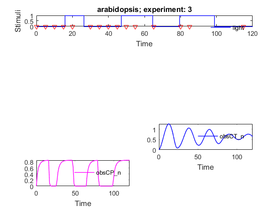

AMIGO_OED: Optimal experimental desing
Contents
Task description
- Solves the optimal experimental design problem using the Control
Vector Parameterization (CVP) approach. The objective is to compute optimal experimental conditions so as to minimize a certain Fisher information based measure.
- It may desing:
- Experimental initial conditions
- Stimuli conditions
- Observables
- Sampling times
- Experiment duration
- It may allows for:
- Multi-experiment (sequential and/or parallel) designs
- D-, E-, A-, DoverE-, designs
- Constraints on the design
- LOCAL optimization methods: indirect and direct methods
- MULTISTART of local methods
- GLOBAL optimization methods: DE, SRES
- HYBRID optimization methods: eSS (as included in MEIGO), sequential hybrids
- MULTI-objective solvers: NSGAII plus the weighted sum method;
- Epsilon-constraint approach can be implemented using constraints
- 'run_identifier' to keep different folders for different runs, this avoids overwriting
- 'nlp_solver' to rapidly change the optimization method
- It may call several optimizers:
- Options:
Call AMIGO_OED from command line
It is recommended to keep all inputs in a 'problem_file'.m. OED task can then be called in two different ways:
1. Using the inputs structure:
> problem_file
> AMIGO_OED(inputs)
2. Using the input file:
> AMIGO_OED('problem_file') > AMIGO_OED('problem_file','run_ident') > AMIGO_OED('problem_file','run_ident','nlp_solver')Example Step-wise stimulation
% TITLE: The circadian clock in Arabidopsis thaliana

%============================ % RESULTS PATHS RELATED DATA %============================ inputs.pathd.results_folder='arabidopsis'; % Folder to keep results (in Results\) inputs.pathd.short_name='arabidopsis'; % Label to identify figures and reports %============================ % MODEL DEFINITION %============================ inputs.model.input_model_type='charmodelC'; % Model type- C inputs.model.n_st=7; % Number of states inputs.model.n_par=27; % Number of parameters inputs.model.n_stimulus=1; % Number of stimuli inputs.model.st_names=char('CL_m','CL_c',...% Names of the states 'CL_n','CT_m','CT_c','CT_n','CP_n'); inputs.model.par_names=char('n1','n2','g1','g2','m1','m2','m3','m4','m5','m6',... 'm7','k1','k2','k3','k4','k5','k6','k7','p1','p2',... 'p3','r1','r2','r3','r4','q1','q2'); % Names of the parameters inputs.model.stimulus_names=char('light'); % Names of the stimuli inputs.model.eqns=... % Model equations char('dCL_m=q1*CP_n*light+n1*CT_n/(g1+CT_n)-m1*CL_m/(k1+CL_m)',... 'dCL_c=p1*CL_m-r1*CL_c+r2*CL_n-m2*CL_c/(k2+CL_c)',... 'dCL_n=r1*CL_c-r2*CL_n-m3*CL_n/(k3+CL_n)',... 'dCT_m=n2*g2^2/(g2^2+CL_n^2)-m4*CT_m/(k4+CT_m)',... 'dCT_c=p2*CT_m-r3*CT_c+r4*CT_n-m5*CT_c/(k5+CT_c)',... 'dCT_n=r3*CT_c-r4*CT_n-m6*CT_n/(k6+CT_n)',... 'dCP_n=(1-light)*p3-m7*CP_n/(k7+CP_n)-q2*light*CP_n');
IMPORTANT:
User may select any customised name but: n, t, u, y, ydot, par, tlast, told, pend and v which are reserved words
inputs.model.par=[7.5038 0.6801 1.4992 3.0412 10.0982... % Nominal parameter 1.9685 3.7511 2.3422 7.2482 1.8981 1.2 3.8045... % values 5.3087 4.1946 2.5356 1.4420 4.8600 1.2 2.1994... 9.4440 0.5 0.2817 0.7676 0.4364 7.3021 4.5703 1.0]; %===================================== % EXPERIMENTAL SCHEME RELATED DATA %===================================== inputs.exps.n_exp=3; % Total number of experiments %(available + experiments to be designed) inputs.exps.exp_type{1}='fixed'; % Indicates if the the experiment should inputs.exps.exp_type{2}='fixed'; % or not be optimally designed : 'od' and 'fixed' inputs.exps.exp_type{3}='od'; for iexp=1:inputs.exps.n_exp % OBSEVABLES DEFINITION inputs.exps.n_obs{iexp}=2; % Number of observed quantities per experiment inputs.exps.obs_names{iexp}=char('Lum','mRNAa'); % Name of the observed quantities per experiment inputs.exps.obs{iexp}=char('Lum=CL_m','mRNAa=CT_m'); inputs.exps.exp_y0{iexp}=zeros(1,inputs.model.n_st);% Initial conditions for each experiment end inputs.exps.u_interp{1}='sustained'; % Stimuli definition for experiment 1: % OPTIONS:u_interp: 'sustained' |'step'| % 'linear'(default)|'pulse-up'|'pulse-down' inputs.exps.t_f{1}=120; % Experiment duration inputs.exps.t_con{1}=[0 120]; % Input swithching times: Initial and final time inputs.exps.u{1}=[1]; % Values of the inputs inputs.exps.n_s{1}=15; % Number of sampling times for each experiment. inputs.exps.error_data{1}=[ % Experimental noise, n_s{iexp}x n_obs{iexp} 0.037642 0.059832 0.072461 0.013999 0.002877 0.020809 0.050324 0.002705 0.042936 0.017832 0.044338 0.022538 0.016335 0.017981 0.164745 0.035301 0.010631 0.102381 0.127745 0.065791 0.081671 0.049568 0.126739 0.050306 0.006308 0.018894 0.054665 0.066953 0.082163 0.015295 ]; inputs.exps.u_interp{2}='pulse-down'; % Stimuli definition for experiment 2 inputs.exps.n_pulses{2}=5; % Number of pulses |-|_|-|_|-|_|-|_|-|_ inputs.exps.u_min{2}=0;inputs.exps.u_max{2}=1; % Minimum and maximum value for the input inputs.exps.t_f{2}=120; % Experiment duration inputs.exps.t_con{2}=[0 :12: 120]; % Initial, switching, final times inputs.exps.n_s{2}=25; % Number of sampling times for each experiment. inputs.exps.error_data{2}=[ 0.146016 0.018152 0.066547 0.045194 0.184009 0.101495 0.047431 0.030858 0.175280 0.033712 0.031945 0.048733 0.107148 0.008715 0.019847 0.072804 0.111892 0.001840 0.104932 0.058752 0.059721 0.033324 0.056537 0.000360 0.051815 0.037473 0.103393 0.028094 0.008084 0.012024 0.188444 0.022982 0.046354 0.031981 0.043436 0.003749 0.030177 0.042560 0.116245 0.110535 0.059345 0.025112 0.218587 0.000564 0.115783 0.043708 0.099239 0.002678 0.010644 0.052990 ]; % % INPUTS FOR THE EXPERIMENT TO BE OPTIMALLY DESIGNED % inputs.exps.u_type{3}='od'; % Stimulation: 'fixed' | 'od' (to be designed) inputs.exps.u_interp{3}='step'; % Stimuli definition for experiment 3: % OPTIONS:u_interp: 'sustained' |'step'| % 'linear'(default)|'pulse-up'|'pulse-down' inputs.exps.n_steps{3}=3; % Number of pulses _|-|_|-|_ inputs.exps.u_min{3}=0*ones(1,inputs.exps.n_steps{3}); inputs.exps.u_max{3}=1*ones(1,inputs.exps.n_steps{3});% Minimum and maximum value for the input inputs.exps.tf_type{3}='fixed'; % [] Experiment duration:'fixed'(def.)|'od'(to be designed) inputs.exps.t_f{3}=120; % Experiment duration inputs.exps.ts_type{3}='fixed'; % [] Sampling times:'fixed'(def.)| 'od'(to be designed) inputs.exps.n_s{3}=15; inputs.exps.std_dev{3}=0.1; % Standard deviation of the noise for each % experiment: Ex: 0.05 <=> 5% %====================================== % PARAMETERS TO BE CONSIDERED FOR OED %====================================== % Parameters to be considered for OED inputs.PEsol.id_global_theta='all'; % 'all'|User selected % Nominal value of the parameters to compute the FIM inputs.PEsol.global_theta_guess=inputs.model.par; %================================== % COST FUNCTION RELATED DATA %================================== inputs.exps.noise_type='homo_var'; % Experimental noise: 'homo' |'homo_var'| 'hetero' inputs.OEDsol.OEDcost_type='Eopt'; % FIM criterium: 'Dopt'|'Eopt'|'Aopt'|'Emod'|'DoverE' %================================== % NUMERICAL METHODS RELATED DATA %================================== % OPTIMIZATION inputs.nlpsol.nlpsolver='eSS'; % [] NLP solver: inputs.nlpsol.eSS.maxeval = 100000; % Maximum number of cost function evaluations inputs.nlpsol.eSS.maxtime = 300; % Maximum computational time in seconds inputs.nlpsol.eSS.local.solver = 'fmincon'; % Local solver- SQP inputs.nlpsol.eSS.local.finish = 'fminsearch'; % Local solver- Direct method
More information regarding the inputs used in this example can be found here.
%==================================================== % CALL AMIGO2 from COMMAND LINE - STEP-WISE DESIGN %==================================================== % It is recommended to keep all inputs in a 'problem_file'.m. % AMIGO2 OED task can be called as follows: % AMIGO_OED('problem_file','run_ident') or AMIGO_OED(inputs) AMIGO_Prep(inputs); AMIGO_OED(inputs);
***********************************
AMIGO2, Copyright @CSIC
AMIGO2_R2016a [Oct 2015]
***********************************
*Date: 21-Jan-2016
Pre processing....this may take a few seconds.
Checking inputs....
WARNING message
AMIGO_check_model: You did not specify inputs.model.exe_type, standard will be assumed
Warning: AMIGO_check_IVPsolver: Changing ivp solver to the only option
compatible with charmodelC, cvodes
Warning: AMIGO_check_IVPsolver: Changing sensitivities solver to, cvodes
Generating C code ...
Mexing files....
Building with 'MinGW64 Compiler (C)'.
D:\AMIGO2_REPO_2014\AMIGO2R2016\Kernel\IVP_solvers\cvodes\C_src4Amigo\src\src_amigo\simulate_amigo_model.c: In function 'simulate_amigo_model':
D:\AMIGO2_REPO_2014\AMIGO2R2016\Kernel\IVP_solvers\cvodes\C_src4Amigo\src\src_amigo\simulate_amigo_model.c:330:16: warning: passing argument 1 of 'mexPrintf' from incompatible pointer type
mexPrintf(stderr,"\nSolver failed at flag = CVode(cvode_mem, tout, y, &t, CV_TSTOP_RETURN);. . .\n");
^
In file included from D:\AMIGO2_REPO_2014\AMIGO2R2016\Kernel\IVP_solvers\cvodes\C_src4Amigo\include\include_amigo/simulate_amigo_model.h:4:0,
from D:\AMIGO2_REPO_2014\AMIGO2R2016\Kernel\IVP_solvers\cvodes\C_src4Amigo\src\src_amigo\simulate_amigo_model.c:1:
C:\MATLAB_R2015b_64/extern/include/mex.h:202:27: note: expected 'const char *' but argument is of type 'struct FILE *'
LIBMWMEX_API_EXTERN_C int mexPrintf(
^
D:\AMIGO2_REPO_2014\AMIGO2R2016\Kernel\IVP_solvers\cvodes\C_src4Amigo\src\src_interface\interface_with_matlab.c: In function 'mexFunction':
D:\AMIGO2_REPO_2014\AMIGO2R2016\Kernel\IVP_solvers\cvodes\C_src4Amigo\src\src_interface\interface_with_matlab.c:200:17: warning: assignment from incompatible pointer type
stats_struct = mxGetPr(plhs[5]);
^
MEX completed successfully.
Files generated....
***********************************
AMIGO2, Copyright @CSIC
AMIGO2_R2016a [Oct 2015]
***********************************
*Date: 21-Jan-2016
Checking inputs....
WARNING message
AMIGO_check_model: You did not specify inputs.model.exe_type, standard will be assumed
Warning: AMIGO_check_IVPsolver: Changing ivp solver to the only option
compatible with charmodelC, cvodes
Warning: AMIGO_check_IVPsolver: Changing sensitivities solver to, cvodes
WARNING message
You have not provided the sampling times.
Equidistant sampling will be assumed for experiment 1
Note however that you may modify your input file by adding
inputs.exps.t_s{iexp}
WARNING message
You have not provided the sampling times.
Equidistant sampling will be assumed for experiment 2
Note however that you may modify your input file by adding
inputs.exps.t_s{iexp}
WARNING message
Standard deviation, inputs.exps.std_dev{iexp}, should be a vector of dimension 1*n_obs{iexp}.
The same std_dev will be used for all observables in experiment 3.
Warning: Directory already exists.
---------------------------------------------------
Local sensitivity problem related active settings
---------------------------------------------------
senssolver: cvodes
ivp_RelTol: 1e-05
ivp_AbsTol: 1e-07
sens_RelTol: ~1e-05
sensmex: cvodesg_arabidopsis
MaxStepSize: Inf
MaxNumberOfSteps: 100000
sens_RelTol: ~1e-05
----------------------------------------------------------
WARNING message
The Fisher Information Matrix is nearly singular.
----------------------------------------------------------
Warning: Matrix is close to singular or badly scaled. Results may be inaccurate.
RCOND = 9.218797e-20.
*************************************************************************
IMPORTANT!!: Most of the optimization solvers have their own
tunning parameters (options).
Defaults have been assigned in the *NLPsolver*_options
files. You may need to modify those settings for your
particular problem, specially:
- maximum number of function evaluations /iterations,
- maximum computational time
******************************************************************
Solving the NLP problem with
>Summary of selected eSS options:
ess_options.
combination: 1
delete: 'standard'
dim_refset: 'auto'
diverse_criteria: 1
initiate: 1
intens: 10
inter_save: 0
iterprint: 1
local: (1x1 struct)
log_var: []
maxeval: 100000
maxtime: 300
n_stuck: 0
ndiverse: 'auto'
plot: 0
prob_bound: 0.5
regenerate: 3
strategy: 0
tolc: 1e-05
tolf: 0.0001
tolx: 0.001
weight: 1000000
default options are used.
>Bounds on the unknowns:
v_guess(1)=0.500000; v_min(1)=0.000000; v_max(1)=1.000000;
v_guess(2)=0.500000; v_min(2)=0.000000; v_max(2)=1.000000;
v_guess(3)=0.500000; v_min(3)=0.000000; v_max(3)=1.000000;
v_guess(4)=40.000000; v_min(4)=20.000000; v_max(4)=80.000000;
v_guess(5)=80.000000; v_min(5)=60.000000; v_max(5)=120.000000;
v_guess(6)=120.000000; v_min(6)=120.000000; v_max(6)=120.000000;
------------------------------------------------------------------------------
eSS R2010B - Enhanced Scatter Search
IIM-CSIC, Vigo, Spain - email: gingproc@iim.csic.es
------------------------------------------------------------------------------
Refset size automatically calculated: 10
Number of diverse solutions automatically calculated: 60
----------------------------------------------------------
WARNING message
The Fisher Information Matrix is nearly singular.
----------------------------------------------------------
Warning: Matrix is close to singular or badly scaled. Results may be inaccurate.
RCOND = 3.452779e-19.
.....
intermediate outputs deleted
.....
Iteration: 1 NFunEvals: 163 Bestf: -6.69212e-08 CPUTime: 26.769772 Var: 1.42626e-16
Call local solver: FMINCON
Iteration: 2 NFunEvals: 288 Bestf: -6.69212e-08 CPUTime: 48.531911 Var: 6.4546e-17
Iteration: 3 NFunEvals: 383 Bestf: -6.7063e-08 CPUTime: 64.444013 Var: 6.99963e-17
Iteration: 4 NFunEvals: 475 Bestf: -6.7063e-08 CPUTime: 79.529310 Var: 6.41089e-17
Iteration: 5 NFunEvals: 567 Bestf: -7.06465e-08 CPUTime: 94.708207 Var: 7.07709e-17
Iteration: 6 NFunEvals: 658 Bestf: -7.06465e-08 CPUTime: 109.029099 Var: 5.40892e-17
Iteration: 7 NFunEvals: 748 Bestf: -7.06465e-08 CPUTime: 123.505992 Var: 5.40892e-17
Iteration: 8 NFunEvals: 841 Bestf: -7.48706e-08 CPUTime: 138.575688 Var: 5.62139e-17
Iteration: 9 NFunEvals: 931 Bestf: -7.48706e-08 CPUTime: 152.943380 Var: 5.62139e-17
Iteration: 10 NFunEvals: 1022 Bestf: -7.48706e-08 CPUTime: 167.794676 Var: 5.45952e-17
Iteration: 11 NFunEvals: 1112 Bestf: -7.48706e-08 CPUTime: 182.427569 Var: 5.45952e-17
Iteration: 12 NFunEvals: 1240 Bestf: -7.48706e-08 CPUTime: 203.581305 Var: 4.34478e-17
.....
intermediate outputs deleted
.....
Iteration: 18 NFunEvals: 1782 Bestf: -7.67531e-08 CPUTime: 290.567463 Var: 4.81368e-17
Iteration: 19 NFunEvals: 1873 Bestf: -7.67531e-08 CPUTime: 305.122356 Var: 5.58089e-17
Final local refinement with: FMINSEARCH
.....
intermediate outputs deleted
.....
Warning: Matrix is close to singular or badly scaled. Results may be inaccurate.
RCOND = 3.885571e-19.
Maximum computation time achieved
Best solution value -7.67531e-08
Decision vector
0.727042
0.63164
0.412403
70.2968
95.6148
120
CPU time 342.235
Number of function evaluations 2095
----------------------------------------------------------
WARNING message
The Fisher Information Matrix is nearly singular.
----------------------------------------------------------
Warning: Matrix is close to singular or badly scaled. Results may be inaccurate.
RCOND = 3.560334e-19.
-----------------------------------------------
Initial value problem related active settings
-----------------------------------------------
ivpsolver: cvodes
RelTol: 1e-05
AbsTol: 1e-07
MaxStepSize: Inf
MaxNumberOfSteps: 100000
----------------------------------------
EXPERIMENTAL DESIGN:
----------------------------------------
Best objective function: Eopt = -7.675309e-08
Input values/temporal elements for Experiment 3:
step interpolation is being used.
Control values:
Input 1: 0.7270 0.6316 0.4124
Control switching times: 0.0000 70.2968 95.6148 120.0000
OED corresponding Cramer Rao expected uncertainty for the unknowns:
Global parameters:
n1 : 7.5038e+00 +- 3.5356e+01;
n2 : 6.8010e-01 +- 3.5126e-01;
g1 : 1.4992e+00 +- 6.8887e+02;
g2 : 3.0412e+00 +- 6.7629e+01;
m1 : 1.0098e+01 +- 3.7722e+01;
m2 : 1.9685e+00 +- 4.9084e+01;
m3 : 3.7511e+00 +- 7.4904e+01;
m4 : 2.3422e+00 +- 4.3613e+00;
m5 : 7.2482e+00 +- 1.0058e+03;
m6 : 1.8981e+00 +- 2.5042e+02;
m7 : 1.2000e+00 +- 3.3169e+04;
k1 : 3.8045e+00 +- 5.3218e+00;
k2 : 5.3087e+00 +- 1.2540e+02;
k3 : 4.1946e+00 +- 8.1229e+01;
k4 : 2.5356e+00 +- 7.2255e+00;
k5 : 1.4420e+00 +- 2.2358e+02;
k6 : 4.8600e+00 +- 2.3197e+03;
k7 : 1.2000e+00 +- 3.3176e+04;
p1 : 2.1994e+00 +- 4.4048e+01;
p2 : 9.4440e+00 +- 1.3113e+03;
p3 : 5.0000e-01 +- 1.3818e+04;
r1 : 2.8170e-01 +- 3.3854e+00;
r2 : 7.6760e-01 +- 3.0820e+00;
r3 : 4.3640e-01 +- 2.2237e+02;
r4 : 7.3021e+00 +- 1.5071e+02;
q1 : 4.5703e+00 +- 1.2631e+05;
q2 : 1.0000e+00 +- 8.2434e+00;
Correlation matrix for the global unknowns:
1.000000e+00 4.712702e-01 7.256270e-01 -2.104621e-01 2.583613e-01 -3.188399e-01 -1.763611e-01 2.262595e-01 -3.715987e-01 -2.603147e-01 -6.212697e-02 -1.978407e-01 -3.444297e-01 -2.105415e-01 6.505523e-02 -4.782502e-01 7.436985e-01 -6.198826e-02 -2.768832e-01 -3.728325e-01 -6.226052e-02 -7.452443e-03 -5.478594e-01 7.390518e-01 -4.274414e-01 6.222970e-02 2.557197e-02
4.712702e-01 1.000000e+00 4.784955e-01 4.472110e-02 -5.233777e-02 -5.453303e-01 -2.019753e-01 -2.598536e-01 -2.030852e-01 -9.057320e-02 -4.772091e-02 -1.076453e-01 -5.012159e-01 -1.855760e-01 -5.137584e-01 -2.769345e-01 5.023816e-01 -4.762670e-02 -3.400772e-01 -2.038173e-01 -4.780193e-02 5.263546e-01 -6.465193e-01 4.824063e-01 -1.147933e-01 4.778176e-02 2.477960e-01
7.256270e-01 4.784955e-01 1.000000e+00 -1.995592e-01 -3.906349e-01 -1.642742e-01 -1.219361e-01 1.620428e-01 -2.107003e-01 -1.027204e-01 -2.193171e-01 -4.367980e-01 -2.255658e-01 -1.168996e-01 9.579840e-03 -3.762332e-01 9.938276e-01 -2.192127e-01 -1.848591e-01 -2.107156e-01 -2.193954e-01 -1.271688e-01 -3.830562e-01 9.626286e-01 8.217102e-02 2.193585e-01 3.770008e-01
-2.104621e-01 4.472110e-02 -1.995592e-01 1.000000e+00 1.875787e-01 4.174488e-01 9.114788e-01 -3.086469e-02 6.043229e-01 6.967003e-01 4.605891e-01 4.748100e-01 5.109380e-01 9.141424e-01 -4.702419e-02 6.083578e-01 -1.618930e-01 4.606290e-01 8.147710e-01 6.028917e-01 4.605526e-01 4.922145e-01 -1.249217e-01 -3.457651e-01 -1.065511e-02 -4.605575e-01 2.393221e-01
2.583613e-01 -5.233777e-02 -3.906349e-01 1.875787e-01 1.000000e+00 1.007583e-01 1.877388e-01 1.446986e-02 2.284926e-01 1.775492e-01 3.626669e-01 5.560795e-01 1.516123e-01 1.580969e-01 2.317102e-02 2.880396e-01 -3.865991e-01 3.626880e-01 1.714015e-01 2.273329e-01 3.626151e-01 4.607192e-02 -1.523180e-01 -4.444915e-01 -7.817170e-01 -3.626004e-01 -5.223802e-01
-3.188399e-01 -5.453303e-01 -1.642742e-01 4.174488e-01 1.007583e-01 1.000000e+00 6.898380e-01 -4.194648e-02 5.517809e-01 4.308938e-01 2.230806e-01 3.588572e-01 9.843391e-01 7.130908e-01 1.178129e-01 5.513968e-01 -2.142010e-01 2.230621e-01 8.550261e-01 5.528546e-01 2.231018e-01 -5.683467e-01 5.833028e-01 -2.980746e-01 -3.524933e-03 -2.231021e-01 2.217158e-02
-1.763611e-01 -2.019753e-01 -1.219361e-01 9.114788e-01 1.877388e-01 6.898380e-01 1.000000e+00 1.649662e-01 6.508639e-01 6.948590e-01 4.339383e-01 4.441823e-01 7.307800e-01 9.922245e-01 1.982137e-01 6.389267e-01 -1.096598e-01 4.339613e-01 9.626380e-01 6.501112e-01 4.339174e-01 1.249224e-01 1.011657e-01 -2.905466e-01 -7.537663e-02 -4.339217e-01 1.676355e-01
2.262595e-01 -2.598536e-01 1.620428e-01 -3.086469e-02 1.446986e-02 -4.194648e-02 1.649662e-01 1.000000e+00 -9.837147e-02 -3.698308e-02 -1.884962e-01 -2.129900e-01 -1.464917e-01 8.295388e-02 9.618582e-01 -1.196796e-01 1.727663e-01 -1.885317e-01 7.125575e-02 -9.830476e-02 -1.884772e-01 -8.904142e-02 9.443152e-02 1.598352e-01 -3.367880e-01 1.884901e-01 -2.349767e-01
-3.715987e-01 -2.030852e-01 -2.107003e-01 6.043229e-01 2.284926e-01 5.517809e-01 6.508639e-01 -9.837147e-02 1.000000e+00 9.567355e-01 3.470640e-01 4.637961e-01 5.905359e-01 6.803072e-01 -3.270413e-02 9.849682e-01 -2.338274e-01 3.469894e-01 6.668742e-01 9.999936e-01 3.471301e-01 2.429011e-02 1.027129e-01 -4.649311e-01 -6.837030e-02 -3.471098e-01 -1.133376e-01
-2.603147e-01 -9.057320e-02 -1.027204e-01 6.967003e-01 1.775492e-01 4.308938e-01 6.948590e-01 -3.698308e-02 9.567355e-01 1.000000e+00 3.619377e-01 4.238436e-01 4.852577e-01 7.073456e-01 -1.166420e-02 9.251284e-01 -9.683419e-02 3.618875e-01 6.538179e-01 9.559231e-01 3.619817e-01 2.038825e-01 -4.379952e-02 -3.554497e-01 -4.980835e-02 -3.619662e-01 -1.332446e-02
-6.212697e-02 -4.772091e-02 -2.193171e-01 4.605891e-01 3.626669e-01 2.230806e-01 4.339383e-01 -1.884962e-01 3.470640e-01 3.619377e-01 1.000000e+00 6.111523e-01 2.917902e-01 4.306306e-01 -1.589352e-01 3.662672e-01 -2.036426e-01 1.000000e+00 3.873490e-01 3.453641e-01 9.999999e-01 1.816874e-01 -1.798537e-01 -2.932821e-01 -2.873112e-02 -9.999999e-01 2.458358e-01
-1.978407e-01 -1.076453e-01 -4.367980e-01 4.748100e-01 5.560795e-01 3.588572e-01 4.441823e-01 -2.129900e-01 4.637961e-01 4.238436e-01 6.111523e-01 1.000000e+00 4.647055e-01 4.372180e-01 -1.640672e-01 5.167462e-01 -4.345053e-01 6.118104e-01 4.599101e-01 4.628357e-01 6.116640e-01 7.279108e-02 -1.941539e-01 -5.270583e-01 -1.544871e-01 -6.116666e-01 1.617434e-01
-3.444297e-01 -5.012159e-01 -2.255658e-01 5.109380e-01 1.516123e-01 9.843391e-01 7.307800e-01 -1.464917e-01 5.905359e-01 4.852577e-01 2.917902e-01 4.647055e-01 1.000000e+00 7.559107e-01 1.096582e-02 5.988507e-01 -2.654738e-01 2.924774e-01 8.848305e-01 5.912094e-01 2.924843e-01 -4.621615e-01 5.010536e-01 -3.629954e-01 2.693752e-02 -2.924868e-01 7.388395e-02
-2.105415e-01 -1.855760e-01 -1.168996e-01 9.141424e-01 1.580969e-01 7.130908e-01 9.922245e-01 8.295388e-02 6.803072e-01 7.073456e-01 4.306306e-01 4.372180e-01 7.559107e-01 1.000000e+00 1.212534e-01 6.654887e-01 -1.117360e-01 4.312076e-01 9.667411e-01 6.794890e-01 4.311667e-01 1.176005e-01 1.150922e-01 -2.924751e-01 -4.012805e-02 -4.311718e-01 1.918786e-01
6.505523e-02 -5.137584e-01 9.579840e-03 -4.702419e-02 2.317102e-02 1.178129e-01 1.982137e-01 9.618582e-01 -3.270413e-02 -1.166420e-02 -1.589352e-01 -1.640672e-01 1.096582e-02 1.212534e-01 1.000000e+00 -3.060294e-02 1.152755e-02 -1.588873e-01 1.560465e-01 -3.221500e-02 -1.587863e-01 -2.339595e-01 2.749024e-01 7.076446e-03 -2.676961e-01 1.588037e-01 -2.817154e-01
-4.782502e-01 -2.769345e-01 -3.762332e-01 6.083578e-01 2.880396e-01 5.513968e-01 6.389267e-01 -1.196796e-01 9.849682e-01 9.251284e-01 3.662672e-01 5.167462e-01 5.988507e-01 6.654887e-01 -3.060294e-02 1.000000e+00 -3.969193e-01 3.672911e-01 6.648345e-01 9.849941e-01 3.674561e-01 4.604815e-02 1.639101e-01 -6.107142e-01 -8.223839e-02 -3.674303e-01 -1.755160e-01
7.436985e-01 5.023816e-01 9.938276e-01 -1.618930e-01 -3.865991e-01 -2.142010e-01 -1.096598e-01 1.727663e-01 -2.338274e-01 -9.683419e-02 -2.036426e-01 -4.345053e-01 -2.654738e-01 -1.117360e-01 1.152755e-02 -3.969193e-01 1.000000e+00 -2.047405e-01 -1.929485e-01 -2.343967e-01 -2.049380e-01 -4.837655e-02 -4.303091e-01 9.633955e-01 8.624018e-02 2.049003e-01 3.984633e-01
-6.198826e-02 -4.762670e-02 -2.192127e-01 4.606290e-01 3.626880e-01 2.230621e-01 4.339613e-01 -1.885317e-01 3.469894e-01 3.618875e-01 1.000000e+00 6.118104e-01 2.924774e-01 4.312076e-01 -1.588873e-01 3.672911e-01 -2.047405e-01 1.000000e+00 3.873556e-01 3.452890e-01 9.999997e-01 1.817206e-01 -1.800136e-01 -2.931674e-01 -2.871913e-02 -9.999998e-01 2.460112e-01
-2.768832e-01 -3.400772e-01 -1.848591e-01 8.147710e-01 1.714015e-01 8.550261e-01 9.626380e-01 7.125575e-02 6.668742e-01 6.538179e-01 3.873490e-01 4.599101e-01 8.848305e-01 9.667411e-01 1.560465e-01 6.648345e-01 -1.929485e-01 3.873556e-01 1.000000e+00 6.665778e-01 3.880011e-01 -9.670702e-02 3.011513e-01 -3.502576e-01 -4.705375e-02 -3.880030e-01 1.221133e-01
-3.728325e-01 -2.038173e-01 -2.107156e-01 6.028917e-01 2.273329e-01 5.528546e-01 6.501112e-01 -9.830476e-02 9.999936e-01 9.559231e-01 3.453641e-01 4.628357e-01 5.912094e-01 6.794890e-01 -3.221500e-02 9.849941e-01 -2.343967e-01 3.452890e-01 6.665778e-01 1.000000e+00 3.463841e-01 2.214471e-02 1.047688e-01 -4.649235e-01 -6.799662e-02 -3.463637e-01 -1.137304e-01
-6.226052e-02 -4.780193e-02 -2.193954e-01 4.605526e-01 3.626151e-01 2.231018e-01 4.339174e-01 -1.884772e-01 3.471301e-01 3.619817e-01 9.999999e-01 6.116640e-01 2.924843e-01 4.311667e-01 -1.587863e-01 3.674561e-01 -2.049380e-01 9.999997e-01 3.880011e-01 3.463841e-01 1.000000e+00 1.816534e-01 -1.797082e-01 -2.933695e-01 -2.870837e-02 -1.000000e+00 2.457024e-01
-7.452443e-03 5.263546e-01 -1.271688e-01 4.922145e-01 4.607192e-02 -5.683467e-01 1.249224e-01 -8.904142e-02 2.429011e-02 2.038825e-01 1.816874e-01 7.279108e-02 -4.621615e-01 1.176005e-01 -2.339595e-01 4.604815e-02 -4.837655e-02 1.817206e-01 -9.670702e-02 2.214471e-02 1.816534e-01 1.000000e+00 -5.738689e-01 -1.210767e-01 3.283279e-02 -1.816541e-01 1.605715e-01
-5.478594e-01 -6.465193e-01 -3.830562e-01 -1.249217e-01 -1.523180e-01 5.833028e-01 1.011657e-01 9.443152e-02 1.027129e-01 -4.379952e-02 -1.798537e-01 -1.941539e-01 5.010536e-01 1.150922e-01 2.749024e-01 1.639101e-01 -4.303091e-01 -1.800136e-01 3.011513e-01 1.047688e-01 -1.797082e-01 -5.738689e-01 1.000000e+00 -3.731052e-01 -1.999009e-02 1.790737e-01 -3.819468e-01
7.390518e-01 4.824063e-01 9.626286e-01 -3.457651e-01 -4.444915e-01 -2.980746e-01 -2.905466e-01 1.598352e-01 -4.649311e-01 -3.554497e-01 -2.932821e-01 -5.270583e-01 -3.629954e-01 -2.924751e-01 7.076446e-03 -6.107142e-01 9.633955e-01 -2.931674e-01 -3.502576e-01 -4.649235e-01 -2.933695e-01 -1.210767e-01 -3.731052e-01 1.000000e+00 1.302977e-01 2.946664e-01 3.938139e-01
-4.274414e-01 -1.147933e-01 8.217102e-02 -1.065511e-02 -7.817170e-01 -3.524933e-03 -7.537663e-02 -3.367880e-01 -6.837030e-02 -4.980835e-02 -2.873112e-02 -1.544871e-01 2.693752e-02 -4.012805e-02 -2.676961e-01 -8.223839e-02 8.624018e-02 -2.871913e-02 -4.705375e-02 -6.799662e-02 -2.870837e-02 3.283279e-02 -1.999009e-02 1.302977e-01 1.000000e+00 2.892810e-02 6.343775e-01
6.222970e-02 4.778176e-02 2.193585e-01 -4.605575e-01 -3.626004e-01 -2.231021e-01 -4.339217e-01 1.884901e-01 -3.471098e-01 -3.619662e-01 -9.999999e-01 -6.116666e-01 -2.924868e-01 -4.311718e-01 1.588037e-01 -3.674303e-01 2.049003e-01 -9.999998e-01 -3.880030e-01 -3.463637e-01 -1.000000e+00 -1.816541e-01 1.790737e-01 2.946664e-01 2.892810e-02 1.000000e+00 -2.457530e-01
2.557197e-02 2.477960e-01 3.770008e-01 2.393221e-01 -5.223802e-01 2.217158e-02 1.676355e-01 -2.349767e-01 -1.133376e-01 -1.332446e-02 2.458358e-01 1.617434e-01 7.388395e-02 1.918786e-01 -2.817154e-01 -1.755160e-01 3.984633e-01 2.460112e-01 1.221133e-01 -1.137304e-01 2.457024e-01 1.605715e-01 -3.819468e-01 3.938139e-01 6.343775e-01 -2.457530e-01 1.000000e+00
Plotting results....
Results (report and struct_results.mat) and plots were kept in the directory:
D:\AMIGO2_REPO_2014\AMIGO2R2016\Results\arabidopsis\OED_arabidopsis_eSS_run1
Click <a href="matlab: cd('D:\AMIGO2_REPO_2014\AMIGO2R2016\Results\arabidopsis\OED_arabidopsis_eSS_run1')">here</a> to go to the results folder or <a href="matlab: load('D:\AMIGO2_REPO_2014\AMIGO2R2016\Results\arabidopsis\OED_arabidopsis_eSS_run1\strreport_arabidopsis_run1.mat')">here</a> to load the results.

Example Pulse-wise stimulation
% % INPUTS FOR THE STIMULATION TO BE OPTIMALLY DESIGNED - PULSE WISE % STIMULATION % inputs.exps.u_type{3}='od'; % Stimulation: 'fixed' | 'od' (to be designed) inputs.exps.u_interp{3}='pulse-up'; % Stimuli definition for experiment 3: % OPTIONS:u_interp: 'sustained' |'step'| % 'linear'(default)|'pulse-up'|'pulse-down' inputs.exps.n_pulses{3}=3; % Number of pulses _|-|_|-|_ inputs.exps.u_min{3}=0; % Min and max value for the stimuli inputs.exps.u_max{3}=1; %==================================================== % CALL AMIGO2 from COMMAND LINE - PULSE-WISE DESIGN %==================================================== % It is recommended to keep all inputs in a 'problem_file'.m. % AMIGO2 OED task can be called as follows: % AMIGO_OED('problem_file','run_ident') or AMIGO_OED(inputs) AMIGO_OED(inputs);
***********************************
AMIGO2, Copyright @CSIC
AMIGO2_R2016a [Oct 2015]
***********************************
*Date: 21-Jan-2016
Checking inputs....
WARNING message
AMIGO_check_model: You did not specify inputs.model.exe_type, standard will be assumed
Warning: AMIGO_check_IVPsolver: Changing ivp solver to the only option
compatible with charmodelC, cvodes
Warning: AMIGO_check_IVPsolver: Changing sensitivities solver to, cvodes
WARNING message
You have not provided the sampling times.
Equidistant sampling will be assumed for experiment 1
Note however that you may modify your input file by adding
inputs.exps.t_s{iexp}
WARNING message
You have not provided the sampling times.
Equidistant sampling will be assumed for experiment 2
Note however that you may modify your input file by adding
inputs.exps.t_s{iexp}
WARNING message
Standard deviation, inputs.exps.std_dev{iexp}, should be a vector of dimension 1*n_obs{iexp}.
The same std_dev will be used for all observables in experiment 3.
Warning: Directory already exists.
---------------------------------------------------
Local sensitivity problem related active settings
---------------------------------------------------
senssolver: cvodes
ivp_RelTol: 1e-05
ivp_AbsTol: 1e-07
sens_RelTol: ~1e-05
sensmex: cvodesg_arabidopsis
MaxStepSize: Inf
MaxNumberOfSteps: 100000
sens_RelTol: ~1e-05
----------------------------------------------------------
WARNING message
The Fisher Information Matrix is nearly singular.
----------------------------------------------------------
Warning: Matrix is close to singular or badly scaled. Results may be inaccurate.
RCOND = 9.218797e-20.
*************************************************************************
IMPORTANT!!: Most of the optimization solvers have their own
tunning parameters (options).
Defaults have been assigned in the *NLPsolver*_options
files. You may need to modify those settings for your
particular problem, specially:
- maximum number of function evaluations /iterations,
- maximum computational time
******************************************************************
Solving the NLP problem with
>Summary of selected eSS options:
ess_options.
combination: 1
delete: 'standard'
dim_refset: 'auto'
diverse_criteria: 1
initiate: 1
intens: 10
inter_save: 0
iterprint: 1
local: (1x1 struct)
log_var: []
maxeval: 100000
maxtime: 300
n_stuck: 0
ndiverse: 'auto'
plot: 0
prob_bound: 0.5
regenerate: 3
strategy: 0
tolc: 1e-05
tolf: 0.0001
tolx: 0.001
weight: 1000000
default options are used.
>Bounds on the unknowns:
v_guess(1)=12.857143; v_min(1)=4.285714; v_max(1)=17.142857;
v_guess(2)=30.000000; v_min(2)=21.428571; v_max(2)=34.285714;
v_guess(3)=47.142857; v_min(3)=38.571429; v_max(3)=51.428571;
v_guess(4)=64.285714; v_min(4)=55.714286; v_max(4)=68.571429;
v_guess(5)=81.428571; v_min(5)=72.857143; v_max(5)=85.714286;
v_guess(6)=98.571429; v_min(6)=90.000000; v_max(6)=102.857143;
------------------------------------------------------------------------------
eSS R2010B - Enhanced Scatter Search
IIM-CSIC, Vigo, Spain - email: gingproc@iim.csic.es
------------------------------------------------------------------------------
Refset size automatically calculated: 10
Number of diverse solutions automatically calculated: 60
----------------------------------------------------------
WARNING message
The Fisher Information Matrix is nearly singular.
----------------------------------------------------------
Warning: Matrix is close to singular or badly scaled. Results may be inaccurate.
RCOND = 5.088105e-18.
.....
intermediate outputs deleted
.....
Iteration: 1 NFunEvals: 173 Bestf: -3.78423e-07 CPUTime: 31.839804 Var: 8.61137e-15
Call local solver: FMINCON
Iteration: 2 NFunEvals: 299 Bestf: -3.80104e-07 CPUTime: 54.865552 Var: 1.90407e-15
Iteration: 3 NFunEvals: 396 Bestf: -3.80104e-07 CPUTime: 71.947661 Var: 1.24507e-15
Iteration: 4 NFunEvals: 490 Bestf: -3.85285e-07 CPUTime: 89.123371 Var: 1.22463e-15
Iteration: 5 NFunEvals: 586 Bestf: -3.89112e-07 CPUTime: 106.564283 Var: 8.69224e-16
Iteration: 6 NFunEvals: 680 Bestf: -3.89112e-07 CPUTime: 123.833594 Var: 9.85012e-16
Iteration: 7 NFunEvals: 774 Bestf: -3.92496e-07 CPUTime: 141.087304 Var: 9.83188e-16
.....
intermediate outputs deleted
.....
Iteration: 15 NFunEvals: 1543 Bestf: -3.93475e-07 CPUTime: 281.441404 Var: 1.67913e-16
Iteration: 16 NFunEvals: 1634 Bestf: -3.93475e-07 CPUTime: 297.805909 Var: 1.68922e-16
Iteration: 17 NFunEvals: 1725 Bestf: -3.93475e-07 CPUTime: 314.248414 Var: 1.70097e-16
Final local refinement with: FMINSEARCH
Number of function evaluations in the local search: 310
CPU Time of the local search: 346.360120 seconds
----------------------------------------------------------
WARNING message
The Fisher Information Matrix is nearly singular.
----------------------------------------------------------
Maximum computation time achieved
Best solution value -3.95483e-07
Decision vector
4.28605
34.1908
40.1678
68.5095
82.3632
94.7821
CPU time 371.236
Number of function evaluations 2036
----------------------------------------------------------
WARNING message
The Fisher Information Matrix is nearly singular.
----------------------------------------------------------
-----------------------------------------------
Initial value problem related active settings
-----------------------------------------------
ivpsolver: cvodes
RelTol: 1e-05
AbsTol: 1e-07
MaxStepSize: Inf
MaxNumberOfSteps: 100000
----------------------------------------
EXPERIMENTAL DESIGN:
----------------------------------------
Best objective function: Eopt = -3.954830e-07
Input values/temporal elements for Experiment 3:
pulse-up interpolation is being used.
Control values:
Input 1: 0.0000 1.0000 0.0000 1.0000 0.0000 1.0000
Control switching times: 0.0000 4.2860 34.1908 40.1678 68.5095 82.3632 94.7821 120.0000
OED corresponding Cramer Rao expected uncertainty for the unknowns:
Global parameters:
n1 : 7.5038e+00 +- 3.7790e+01;
n2 : 6.8010e-01 +- 4.2512e-01;
g1 : 1.4992e+00 +- 8.4077e+02;
g2 : 3.0412e+00 +- 6.1720e+01;
m1 : 1.0098e+01 +- 3.3348e+01;
m2 : 1.9685e+00 +- 4.9351e+01;
m3 : 3.7511e+00 +- 6.8996e+01;
m4 : 2.3422e+00 +- 4.6012e+00;
m5 : 7.2482e+00 +- 1.5058e+02;
m6 : 1.8981e+00 +- 9.6623e+01;
m7 : 1.2000e+00 +- 4.5759e+02;
k1 : 3.8045e+00 +- 4.3602e+00;
k2 : 5.3087e+00 +- 1.2371e+02;
k3 : 4.1946e+00 +- 7.3500e+01;
k4 : 2.5356e+00 +- 7.7096e+00;
k5 : 1.4420e+00 +- 5.5479e+01;
k6 : 4.8600e+00 +- 2.8741e+03;
k7 : 1.2000e+00 +- 4.5711e+02;
p1 : 2.1994e+00 +- 4.0537e+01;
p2 : 9.4440e+00 +- 1.9644e+02;
p3 : 5.0000e-01 +- 1.9293e+02;
r1 : 2.8170e-01 +- 3.6509e+00;
r2 : 7.6760e-01 +- 3.4003e+00;
r3 : 4.3640e-01 +- 2.4455e+02;
r4 : 7.3021e+00 +- 1.4785e+02;
q1 : 4.5703e+00 +- 1.7760e+03;
q2 : 1.0000e+00 +- 1.2107e+01;
Correlation matrix for the global unknowns:
1.000000e+00 6.038218e-01 8.338974e-01 8.340518e-02 1.522071e-01 -2.467204e-01 8.032435e-02 1.225758e-01 2.786769e-03 4.696402e-01 -4.203715e-01 -2.776646e-01 -2.616020e-01 6.680478e-02 -9.006282e-02 -7.165183e-01 8.399150e-01 -4.103003e-01 -8.566749e-02 -7.395631e-03 -4.254723e-01 1.476663e-01 -6.636299e-01 8.212453e-01 -3.856878e-01 4.204139e-01 1.146367e-01
6.038218e-01 1.000000e+00 6.271156e-01 2.528165e-01 -1.363732e-01 -5.507368e-01 -3.576341e-02 -2.194852e-01 -1.098903e-01 4.884445e-01 -1.854110e-01 -2.344309e-01 -5.123396e-01 -1.995042e-02 -5.152503e-01 -6.079361e-01 6.504728e-01 -1.773397e-01 -2.506604e-01 -1.177128e-01 -1.897940e-01 6.194059e-01 -7.344626e-01 6.259580e-01 -1.680583e-01 1.864696e-01 2.497380e-01
8.338974e-01 6.271156e-01 1.000000e+00 1.895150e-01 -4.012596e-01 -9.211197e-02 2.157687e-01 9.437814e-02 8.053185e-02 5.373561e-01 -4.375777e-01 -3.168181e-01 -1.147114e-01 2.301941e-01 -1.205385e-01 -8.218887e-01 9.955105e-01 -4.240405e-01 7.074747e-02 7.547818e-02 -4.423366e-01 9.196537e-02 -6.129520e-01 9.989061e-01 3.778963e-02 4.344773e-01 4.879256e-01
8.340518e-02 2.528165e-01 1.895150e-01 1.000000e+00 -2.813966e-01 2.472127e-01 8.841385e-01 1.870599e-01 8.670441e-02 5.489327e-01 -1.084248e-01 2.273872e-01 3.237355e-01 8.849988e-01 7.813416e-02 -1.117720e-01 2.376682e-01 -9.284272e-02 7.398188e-01 7.588993e-02 -1.180220e-01 4.994364e-01 -2.309519e-01 1.903969e-01 1.563065e-01 1.119969e-01 5.393265e-01
1.522071e-01 -1.363732e-01 -4.012596e-01 -2.813966e-01 1.000000e+00 -1.349052e-01 -2.807456e-01 -1.613065e-02 -6.579241e-02 -3.039332e-01 1.914857e-02 1.732754e-01 -1.312730e-01 -3.142101e-01 2.851623e-02 3.187972e-01 -4.024545e-01 1.156190e-02 -2.473284e-01 -6.947598e-02 1.980484e-02 -7.476333e-02 6.745984e-02 -4.239669e-01 -7.447414e-01 -1.449210e-02 -6.930196e-01
-2.467204e-01 -5.507368e-01 -9.211197e-02 2.472127e-01 -1.349052e-01 1.000000e+00 5.959039e-01 7.031503e-02 2.201367e-01 -2.815205e-01 -1.658439e-01 3.972194e-01 9.866231e-01 6.236340e-01 2.404756e-01 2.048054e-01 -1.326372e-01 -1.589832e-01 8.209585e-01 2.289179e-01 -1.686258e-01 -6.978288e-01 5.731527e-01 -9.298704e-02 2.181844e-01 1.647359e-01 2.562938e-01
8.032435e-02 -3.576341e-02 2.157687e-01 8.841385e-01 -2.807456e-01 5.959039e-01 1.000000e+00 3.963772e-01 1.527617e-01 3.824489e-01 -1.739404e-01 2.680161e-01 6.217399e-01 9.908100e-01 3.561922e-01 -9.592261e-02 2.375097e-01 -1.588146e-01 9.443127e-01 1.475390e-01 -1.822290e-01 7.464735e-02 2.289636e-02 2.135777e-01 1.298825e-01 1.754707e-01 5.232900e-01
1.225758e-01 -2.194852e-01 9.437814e-02 1.870599e-01 -1.613065e-02 7.031503e-02 3.963772e-01 1.000000e+00 -7.235501e-02 1.957831e-01 1.355921e-01 -2.967830e-02 -2.136502e-02 3.077382e-01 9.491269e-01 -1.147607e-01 1.082912e-01 1.353725e-01 2.811176e-01 -7.202843e-02 1.361563e-01 -1.557021e-02 1.123688e-01 8.582939e-02 -3.185368e-01 -1.366528e-01 3.307358e-03
2.786769e-03 -1.098903e-01 8.053185e-02 8.670441e-02 -6.579241e-02 2.201367e-01 1.527617e-01 -7.235501e-02 1.000000e+00 3.421455e-01 -5.815597e-01 -5.372362e-03 2.236864e-01 1.745637e-01 -3.053519e-02 5.013602e-01 6.888495e-02 -5.817026e-01 1.892403e-01 9.997255e-01 -5.766321e-01 -1.356642e-01 2.953229e-02 4.735983e-02 1.126446e-01 5.735793e-01 3.269100e-02
4.696402e-01 4.884445e-01 5.373561e-01 5.489327e-01 -3.039332e-01 -2.815205e-01 3.824489e-01 1.957831e-01 3.421455e-01 1.000000e+00 -2.702552e-01 -1.959879e-01 -2.371502e-01 3.429750e-01 9.533473e-03 -2.672855e-01 6.046890e-01 -2.606564e-01 1.525626e-01 3.261257e-01 -2.740896e-01 5.852313e-01 -5.287602e-01 5.241627e-01 7.804961e-03 2.690898e-01 3.731469e-01
-4.203715e-01 -1.854110e-01 -4.375777e-01 -1.084248e-01 1.914857e-02 -1.658439e-01 -1.739404e-01 1.355921e-01 -5.815597e-01 -2.702552e-01 1.000000e+00 1.524895e-01 -1.652685e-01 -2.103211e-01 1.811895e-01 4.713967e-02 -4.177307e-01 9.995940e-01 -1.638618e-01 -5.785147e-01 9.998272e-01 1.205294e-01 2.436983e-01 -4.170432e-01 -1.215928e-02 -9.998372e-01 3.787054e-02
-2.776646e-01 -2.344309e-01 -3.168181e-01 2.273872e-01 1.732754e-01 3.972194e-01 2.680161e-01 -2.967830e-02 -5.372362e-03 -1.959879e-01 1.524895e-01 1.000000e+00 4.734362e-01 2.619771e-01 4.792780e-02 2.745364e-01 -3.200026e-01 1.653421e-01 3.696990e-01 -4.147952e-03 1.420468e-01 -1.762735e-01 2.948786e-02 -3.140707e-01 1.239671e-01 -1.455721e-01 3.170041e-01
-2.616020e-01 -5.123396e-01 -1.147114e-01 3.237355e-01 -1.312730e-01 9.866231e-01 6.217399e-01 -2.136502e-02 2.236864e-01 -2.371502e-01 -1.652685e-01 4.734362e-01 1.000000e+00 6.531289e-01 1.466022e-01 2.261433e-01 -1.476319e-01 -1.565368e-01 8.406833e-01 2.304211e-01 -1.696307e-01 -6.208919e-01 5.112832e-01 -1.140712e-01 2.742632e-01 1.653355e-01 3.066473e-01
6.680478e-02 -1.995042e-02 2.301941e-01 8.849988e-01 -3.142101e-01 6.236340e-01 9.908100e-01 3.077382e-01 1.745637e-01 3.429750e-01 -2.103211e-01 2.619771e-01 6.531289e-01 1.000000e+00 2.736181e-01 -9.695687e-02 2.456803e-01 -1.945766e-01 9.492966e-01 1.701845e-01 -2.187257e-01 6.052545e-02 2.259553e-02 2.289093e-01 1.766294e-01 2.115874e-01 5.550392e-01
-9.006282e-02 -5.152503e-01 -1.205385e-01 7.813416e-02 2.851623e-02 2.404756e-01 3.561922e-01 9.491269e-01 -3.053519e-02 9.533473e-03 1.811895e-01 4.792780e-02 1.466022e-01 2.736181e-01 1.000000e+00 9.486003e-02 -1.163416e-01 1.782646e-01 3.258247e-01 -2.754234e-02 1.831880e-01 -2.170789e-01 3.419527e-01 -1.276610e-01 -2.283948e-01 -1.825032e-01 -7.995673e-02
-7.165183e-01 -6.079361e-01 -8.218887e-01 -1.117720e-01 3.187972e-01 2.048054e-01 -9.592261e-02 -1.147607e-01 5.013602e-01 -2.672855e-01 4.713967e-02 2.745364e-01 2.261433e-01 -9.695687e-02 9.486003e-02 1.000000e+00 -8.241558e-01 3.538745e-02 4.896556e-02 5.053857e-01 5.400831e-02 -1.552274e-01 5.464724e-01 -8.402071e-01 2.260295e-02 -4.894314e-02 -4.070296e-01
8.399150e-01 6.504728e-01 9.955105e-01 2.376682e-01 -4.024545e-01 -1.326372e-01 2.375097e-01 1.082912e-01 6.888495e-02 6.046890e-01 -4.177307e-01 -3.200026e-01 -1.476319e-01 2.456803e-01 -1.163416e-01 -8.241558e-01 1.000000e+00 -4.038680e-01 7.239637e-02 6.206406e-02 -4.229370e-01 1.636605e-01 -6.437678e-01 9.945242e-01 3.234443e-02 4.151277e-01 4.969439e-01
-4.103003e-01 -1.773397e-01 -4.240405e-01 -9.284272e-02 1.156190e-02 -1.589832e-01 -1.588146e-01 1.353725e-01 -5.817026e-01 -2.606564e-01 9.995940e-01 1.653421e-01 -1.565368e-01 -1.945766e-01 1.782646e-01 3.538745e-02 -4.038680e-01 1.000000e+00 -1.507951e-01 -5.788774e-01 9.989822e-01 1.237893e-01 2.295624e-01 -4.032759e-01 -4.645531e-03 -9.993675e-01 6.259324e-02
-8.566749e-02 -2.506604e-01 7.074747e-02 7.398188e-01 -2.473284e-01 8.209585e-01 9.443127e-01 2.811176e-01 1.892403e-01 1.525626e-01 -1.638618e-01 3.696990e-01 8.406833e-01 9.492966e-01 3.258247e-01 4.896556e-02 7.239637e-02 -1.507951e-01 1.000000e+00 1.890093e-01 -1.708161e-01 -2.041883e-01 2.697908e-01 6.925902e-02 1.855304e-01 1.647974e-01 4.641688e-01
-7.395631e-03 -1.177128e-01 7.547818e-02 7.588993e-02 -6.947598e-02 2.289179e-01 1.475390e-01 -7.202843e-02 9.997255e-01 3.261257e-01 -5.785147e-01 -4.147952e-03 2.304211e-01 1.701845e-01 -2.754234e-02 5.053857e-01 6.206406e-02 -5.788774e-01 1.890093e-01 1.000000e+00 -5.734050e-01 -1.504366e-01 4.365132e-02 4.239586e-02 1.141334e-01 5.704106e-01 2.976242e-02
-4.254723e-01 -1.897940e-01 -4.423366e-01 -1.180220e-01 1.980484e-02 -1.686258e-01 -1.822290e-01 1.361563e-01 -5.766321e-01 -2.740896e-01 9.998272e-01 1.420468e-01 -1.696307e-01 -2.187257e-01 1.831880e-01 5.400831e-02 -4.229370e-01 9.989822e-01 -1.708161e-01 -5.734050e-01 1.000000e+00 1.169190e-01 2.523914e-01 -4.220401e-01 -1.452759e-02 -9.998844e-01 2.637032e-02
1.476663e-01 6.194059e-01 9.196537e-02 4.994364e-01 -7.476333e-02 -6.978288e-01 7.464735e-02 -1.557021e-02 -1.356642e-01 5.852313e-01 1.205294e-01 -1.762735e-01 -6.208919e-01 6.052545e-02 -2.170789e-01 -1.552274e-01 1.636605e-01 1.237893e-01 -2.041883e-01 -1.504366e-01 1.169190e-01 1.000000e+00 -5.776593e-01 9.434818e-02 -5.516212e-02 -1.167826e-01 1.157362e-01
-6.636299e-01 -7.344626e-01 -6.129520e-01 -2.309519e-01 6.745984e-02 5.731527e-01 2.289636e-02 1.123688e-01 2.953229e-02 -5.287602e-01 2.436983e-01 2.948786e-02 5.112832e-01 2.259553e-02 3.419527e-01 5.464724e-01 -6.437678e-01 2.295624e-01 2.697908e-01 4.365132e-02 2.523914e-01 -5.776593e-01 1.000000e+00 -6.157732e-01 -6.596088e-02 -2.468636e-01 -3.688618e-01
8.212453e-01 6.259580e-01 9.989061e-01 1.903969e-01 -4.239669e-01 -9.298704e-02 2.135777e-01 8.582939e-02 4.735983e-02 5.241627e-01 -4.170432e-01 -3.140707e-01 -1.140712e-01 2.289093e-01 -1.276610e-01 -8.402071e-01 9.945242e-01 -4.032759e-01 6.925902e-02 4.239586e-02 -4.220401e-01 9.434818e-02 -6.157732e-01 1.000000e+00 6.672641e-02 4.141610e-01 5.052042e-01
-3.856878e-01 -1.680583e-01 3.778963e-02 1.563065e-01 -7.447414e-01 2.181844e-01 1.298825e-01 -3.185368e-01 1.126446e-01 7.804961e-03 -1.215928e-02 1.239671e-01 2.742632e-01 1.766294e-01 -2.283948e-01 2.260295e-02 3.234443e-02 -4.645531e-03 1.855304e-01 1.141334e-01 -1.452759e-02 -5.516212e-02 -6.596088e-02 6.672641e-02 1.000000e+00 1.027513e-02 5.731847e-01
4.204139e-01 1.864696e-01 4.344773e-01 1.119969e-01 -1.449210e-02 1.647359e-01 1.754707e-01 -1.366528e-01 5.735793e-01 2.690898e-01 -9.998372e-01 -1.455721e-01 1.653355e-01 2.115874e-01 -1.825032e-01 -4.894314e-02 4.151277e-01 -9.993675e-01 1.647974e-01 5.704106e-01 -9.998844e-01 -1.167826e-01 -2.468636e-01 4.141610e-01 1.027513e-02 1.000000e+00 -3.870430e-02
1.146367e-01 2.497380e-01 4.879256e-01 5.393265e-01 -6.930196e-01 2.562938e-01 5.232900e-01 3.307358e-03 3.269100e-02 3.731469e-01 3.787054e-02 3.170041e-01 3.066473e-01 5.550392e-01 -7.995673e-02 -4.070296e-01 4.969439e-01 6.259324e-02 4.641688e-01 2.976242e-02 2.637032e-02 1.157362e-01 -3.688618e-01 5.052042e-01 5.731847e-01 -3.870430e-02 1.000000e+00
Plotting results....
Results (report and struct_results.mat) and plots were kept in the directory:
D:\AMIGO2_REPO_2014\AMIGO2R2016\Results\arabidopsis\OED_arabidopsis_eSS_run1
Click <a href="matlab: cd('D:\AMIGO2_REPO_2014\AMIGO2R2016\Results\arabidopsis\OED_arabidopsis_eSS_run1')">here</a> to go to the results folder or <a href="matlab: load('D:\AMIGO2_REPO_2014\AMIGO2R2016\Results\arabidopsis\OED_arabidopsis_eSS_run1\strreport_arabidopsis_run1.mat')">here</a> to load the results.
Example optimal observable selection
% % INPUTS FOR THE OBSERVABLES TO BE OPTIMALLY DESIGNED % inputs.exps.obs_type{3}='od'; % Type of observation: 'fixed' | 'od' (to be designed) inputs.exps.obs{3}='states'; % States within observables will be selected inputs.exps.max_obs{3}=2; % Maximum number of observables inputs.exps.index_obs_guess{3}=[1 0 0 1 0 0 0]; % Initial guess: 1: measured state; 0: unmeasured state %======================================================= % CALL AMIGO2 from COMMAND LINE - SAMPLING TIMES DESIGN %======================================================= % It is recommended to keep all inputs in a 'problem_file'.m. % AMIGO2 OED task can be called as follows: % AMIGO_OED('problem_file','run_ident') or AMIGO_OED(inputs) AMIGO_OED(inputs);
***********************************
AMIGO2, Copyright @CSIC
AMIGO2_R2016a [Oct 2015]
***********************************
*Date: 21-Jan-2016
Checking inputs....
WARNING message
AMIGO_check_model: You did not specify inputs.model.exe_type, standard will be assumed
Warning: AMIGO_check_IVPsolver: Changing ivp solver to the only option
compatible with charmodelC, cvodes
Warning: AMIGO_check_IVPsolver: Changing sensitivities solver to, cvodes
WARNING message
You have not provided the sampling times.
Equidistant sampling will be assumed for experiment 1
Note however that you may modify your input file by adding
inputs.exps.t_s{iexp}
WARNING message
You have not provided the sampling times.
Equidistant sampling will be assumed for experiment 2
Note however that you may modify your input file by adding
inputs.exps.t_s{iexp}
WARNING message
Standard deviation, inputs.exps.std_dev{iexp}, should be a vector of dimension 1*n_obs{iexp}.
The same std_dev will be used for all observables in experiment 3.
Warning: Directory already exists.
---------------------------------------------------
Local sensitivity problem related active settings
---------------------------------------------------
senssolver: cvodes
ivp_RelTol: 1e-05
ivp_AbsTol: 1e-07
sens_RelTol: ~1e-05
sensmex: cvodesg_arabidopsis
MaxStepSize: Inf
MaxNumberOfSteps: 100000
sens_RelTol: ~1e-05
----------------------------------------------------------
WARNING message
The Fisher Information Matrix is nearly singular.
----------------------------------------------------------
Warning: Matrix is close to singular or badly scaled. Results may be inaccurate.
RCOND = 9.218797e-20.
*************************************************************************
IMPORTANT!!: Most of the optimization solvers have their own
tunning parameters (options).
Defaults have been assigned in the *NLPsolver*_options
files. You may need to modify those settings for your
particular problem, specially:
- maximum number of function evaluations /iterations,
- maximum computational time
******************************************************************
Solving the NLP problem with
>Summary of selected eSS options:
ess_options.
combination: 1
delete: 'standard'
dim_refset: 'auto'
diverse_criteria: 1
initiate: 1
intens: 10
inter_save: 0
iterprint: 1
local: (1x1 struct)
log_var: []
maxeval: 100000
maxtime: 300
n_stuck: 0
ndiverse: 'auto'
plot: 0
prob_bound: 0.5
regenerate: 3
strategy: 0
tolc: 1e-05
tolf: 0.0001
tolx: 0.001
weight: 1000000
default options are used.
>Bounds on the unknowns:
v_guess(1)=12.857143; v_min(1)=4.285714; v_max(1)=17.142857;
v_guess(2)=30.000000; v_min(2)=21.428571; v_max(2)=34.285714;
v_guess(3)=47.142857; v_min(3)=38.571429; v_max(3)=51.428571;
v_guess(4)=64.285714; v_min(4)=55.714286; v_max(4)=68.571429;
v_guess(5)=81.428571; v_min(5)=72.857143; v_max(5)=85.714286;
v_guess(6)=98.571429; v_min(6)=90.000000; v_max(6)=102.857143;
v_guess(7)=1.000000; v_min(7)=0.000000; v_max(7)=1.000000;
v_guess(8)=0.000000; v_min(8)=0.000000; v_max(8)=1.000000;
v_guess(9)=0.000000; v_min(9)=0.000000; v_max(9)=1.000000;
v_guess(10)=1.000000; v_min(10)=0.000000; v_max(10)=1.000000;
v_guess(11)=0.000000; v_min(11)=0.000000; v_max(11)=1.000000;
v_guess(12)=0.000000; v_min(12)=0.000000; v_max(12)=1.000000;
v_guess(13)=0.000000; v_min(13)=0.000000; v_max(13)=1.000000;
------------------------------------------------------------------------------
eSS R2010B - Enhanced Scatter Search
IIM-CSIC, Vigo, Spain - email: gingproc@iim.csic.es
------------------------------------------------------------------------------
Refset size automatically calculated: 12
Number of diverse solutions automatically calculated: 130
----------------------------------------------------------
WARNING message
The Fisher Information Matrix is nearly singular.
----------------------------------------------------------
Warning: Matrix is close to singular or badly scaled. Results may be inaccurate.
RCOND = 5.088105e-18.
.....
intermediate outputs deleted
.....
Initial Pop: NFunEvals: 136 Bestf: -5.00075e-06 CPUTime: 25.490563 Var: 1.17424e+12
Iteration: 1 NFunEvals: 286 Bestf: -4.97859e-05 CPUTime: 53.258741 Var: 8.33333e+10
Call local solver: FMINCON
.....
intermediate outputs deleted
.....
Iteration: 2 NFunEvals: 558 Bestf: -6.57875e-05 CPUTime: 103.600264 Var: 5.55533e-10
Iteration: 3 NFunEvals: 707 Bestf: -6.57875e-05 CPUTime: 131.212441 Var: 5.76062e-10
Iteration: 4 NFunEvals: 852 Bestf: -6.73026e-05 CPUTime: 157.171008 Var: 2.48239e-10
Iteration: 5 NFunEvals: 998 Bestf: -7.20286e-05 CPUTime: 183.769178 Var: 2.24763e-10
.....
intermediate outputs deleted
.....
Iteration: 9 NFunEvals: 1565 Bestf: -7.43185e-05 CPUTime: 287.307042 Var: 5.07574e-12
Iteration: 10 NFunEvals: 1709 Bestf: -7.45715e-05 CPUTime: 313.608810 Var: 2.78345e-12
Final local refinement with: FMINSEARCH
Initial point function value: -0.000075
Local solution function value: -0.000076
Number of function evaluations in the local search: 484
CPU Time of the local search: 541.897468 seconds
----------------------------------------------------------
WARNING message
The Fisher Information Matrix is nearly singular.
----------------------------------------------------------
Maximum computation time achieved
Best solution value -7.55584e-05
Decision vector
8.01216
33.5501
38.5714
60.4011
85.7114
90.1076
0.239387
0.237287
1.41054e-06
0.218987
0.43283
0.994319
0.770751
CPU time 402.701
Number of function evaluations 2194
----------------------------------------------------------
WARNING message
The Fisher Information Matrix is nearly singular.
----------------------------------------------------------
-----------------------------------------------
Initial value problem related active settings
-----------------------------------------------
ivpsolver: cvodes
RelTol: 1e-05
AbsTol: 1e-07
MaxStepSize: Inf
MaxNumberOfSteps: 100000
----------------------------------------
> EXPERIMENTAL DESIGN:
----------------------------------------
> Best objective function: Eopt = -7.555835e-05
-->Observables for each experiment:
Experiment 3: obs=[ obsCT_n obsCP_n ]
-->Input values/temporal elements for Experiment 3:
pulse-up interpolation is being used.
Control values:
Input 1: 0.0000 1.0000 0.0000 1.0000 0.0000 1.0000
Control switching times: 0.0000 8.0122 33.5501 38.5714 60.4011 85.7114 90.1076 120.0000
OED corresponding Cramer Rao expected uncertainty for the unknowns:
Global parameters:
n1 : 7.5038e+00 +- 7.5223e+00;
n2 : 6.8010e-01 +- 3.0017e-01;
g1 : 1.4992e+00 +- 1.2109e+00;
g2 : 3.0412e+00 +- 4.0842e+01;
m1 : 1.0098e+01 +- 1.1201e+01;
m2 : 1.9685e+00 +- 2.4842e+01;
m3 : 3.7511e+00 +- 3.4416e+01;
m4 : 2.3422e+00 +- 4.4163e+00;
m5 : 7.2482e+00 +- 6.3023e+01;
m6 : 1.8981e+00 +- 6.5220e+01;
m7 : 1.2000e+00 +- 2.5975e+00;
k1 : 3.8045e+00 +- 3.0807e+00;
k2 : 5.3087e+00 +- 5.9415e+01;
k3 : 4.1946e+00 +- 3.3773e+01;
k4 : 2.5356e+00 +- 7.2876e+00;
k5 : 1.4420e+00 +- 1.3446e+01;
k6 : 4.8600e+00 +- 2.0549e+02;
k7 : 1.2000e+00 +- 6.5342e+00;
p1 : 2.1994e+00 +- 1.6216e+01;
p2 : 9.4440e+00 +- 8.0994e+01;
p3 : 5.0000e-01 +- 6.1642e-01;
r1 : 2.8170e-01 +- 3.0680e+00;
r2 : 7.6760e-01 +- 1.8381e+00;
r3 : 4.3640e-01 +- 6.5870e+00;
r4 : 7.3021e+00 +- 9.4016e+01;
q1 : 4.5703e+00 +- 3.1344e+00;
q2 : 1.0000e+00 +- 1.6354e+00;
Correlation matrix for the global unknowns:
1.000000e+00 1.024870e-01 5.131257e-01 4.471946e-01 8.866177e-01 5.383779e-02 5.159385e-01 1.375545e-01 3.571174e-01 3.957442e-01 6.238271e-01 4.149041e-01 1.546730e-01 4.938456e-01 9.433432e-02 3.774963e-01 3.784086e-01 6.659594e-01 4.917699e-01 3.428674e-01 -6.300805e-01 1.930930e-01 -3.848473e-01 -5.129774e-01 -3.752137e-01 7.433749e-01 3.460759e-01
1.024870e-01 1.000000e+00 -9.228568e-02 6.587071e-01 9.585384e-02 -6.377562e-01 2.270152e-01 -3.379381e-01 -4.722717e-03 3.773338e-01 7.069088e-02 -7.862677e-02 -5.277499e-01 2.881619e-01 -5.411228e-01 -1.323103e-02 4.162313e-01 6.832766e-02 -3.397261e-02 -1.624865e-02 -5.295953e-02 7.708312e-01 -4.882350e-01 -2.076423e-01 -2.666781e-01 2.556365e-01 7.416841e-02
5.131257e-01 -9.228568e-02 1.000000e+00 2.697571e-01 3.091209e-01 4.874566e-03 3.546834e-01 2.647359e-01 1.535277e-01 3.974399e-01 2.990430e-01 5.788905e-01 9.000112e-02 2.530434e-01 2.543948e-01 1.674961e-01 4.201011e-01 3.075688e-01 3.287740e-01 1.403458e-01 -2.710676e-01 1.069513e-01 -2.771453e-01 -9.320316e-02 -2.667054e-03 1.273144e-01 3.053688e-01
4.471946e-01 6.587071e-01 2.697571e-01 1.000000e+00 2.694755e-01 -4.915092e-01 8.009392e-01 1.289248e-01 2.300643e-01 7.052013e-01 2.103235e-01 -1.681455e-02 -4.054194e-01 8.488179e-01 -4.523436e-02 2.379810e-01 7.049515e-01 2.267428e-01 5.218580e-01 2.125447e-01 -2.175887e-01 8.632832e-01 -4.365553e-01 -5.218329e-01 -4.857865e-01 3.697954e-01 1.624614e-01
8.866177e-01 9.585384e-02 3.091209e-01 2.694755e-01 1.000000e+00 2.854116e-01 4.160425e-01 1.139159e-01 2.751296e-01 1.182129e-01 6.491355e-01 6.388708e-01 3.665139e-01 4.060197e-01 7.740338e-02 2.927360e-01 6.060577e-02 6.969117e-01 5.126244e-01 2.730246e-01 -6.654279e-01 -3.922597e-02 -2.557112e-01 -5.385059e-01 -4.653826e-01 7.641859e-01 3.786183e-01
5.383779e-02 -6.377562e-01 4.874566e-03 -4.915092e-01 2.854116e-01 1.000000e+00 -3.362112e-02 1.063254e-01 -4.428400e-02 -4.320258e-01 8.821237e-02 4.400467e-01 9.674304e-01 -6.116114e-02 2.509176e-01 -3.506389e-02 -5.011616e-01 1.135066e-01 4.373312e-01 -2.714789e-02 -1.380961e-01 -8.460905e-01 6.481814e-01 -3.299399e-02 -6.903915e-02 3.224727e-02 4.982481e-02
5.159385e-01 2.270152e-01 3.546834e-01 8.009392e-01 4.160425e-01 -3.362112e-02 1.000000e+00 5.790740e-01 2.249426e-01 5.756380e-01 2.119486e-01 2.144006e-01 -4.444686e-02 9.728849e-01 4.609698e-01 2.497447e-01 5.147701e-01 2.387159e-01 8.758777e-01 2.172856e-01 -2.454234e-01 4.391549e-01 -1.216046e-01 -6.758092e-01 -6.774461e-01 3.336616e-01 1.389337e-01
1.375545e-01 -3.379381e-01 2.647359e-01 1.289248e-01 1.139159e-01 1.063254e-01 5.790740e-01 1.000000e+00 -1.255650e-02 1.530269e-01 -7.993101e-02 2.145454e-01 -7.175193e-02 4.471985e-01 9.742564e-01 1.953053e-02 7.100775e-02 -8.035728e-02 5.021775e-01 -4.932657e-03 6.775221e-02 -8.161068e-02 2.011730e-01 -4.190928e-01 -5.266849e-01 -8.350971e-02 -8.219291e-02
3.571174e-01 -4.722717e-03 1.535277e-01 2.300643e-01 2.751296e-01 -4.428400e-02 2.249426e-01 -1.255650e-02 1.000000e+00 4.598494e-01 2.397699e-01 7.730066e-02 1.818495e-02 2.175377e-01 -1.483366e-02 9.985439e-01 2.725339e-01 2.567188e-01 1.780244e-01 9.993709e-01 -2.439516e-01 1.421352e-01 -2.678936e-01 -5.957496e-01 -1.054187e-02 2.613235e-01 1.465879e-01
3.957442e-01 3.773338e-01 3.974399e-01 7.052013e-01 1.182129e-01 -4.320258e-01 5.756380e-01 1.530269e-01 4.598494e-01 1.000000e+00 9.853449e-02 -8.803979e-02 -3.589739e-01 5.195897e-01 4.319461e-02 4.645618e-01 9.665811e-01 9.780251e-02 3.488839e-01 4.389483e-01 -8.070486e-02 6.466952e-01 -2.211015e-01 -6.028744e-01 -4.199972e-01 2.112152e-01 6.443830e-02
6.238271e-01 7.069088e-02 2.990430e-01 2.103235e-01 6.491355e-01 8.821237e-02 2.119486e-01 -7.993101e-02 2.397699e-01 9.853449e-02 1.000000e+00 4.203249e-01 1.812060e-01 2.352662e-01 -9.130843e-02 2.487190e-01 9.605059e-02 9.649378e-01 2.325197e-01 2.313463e-01 -7.469664e-01 5.577416e-02 -3.667425e-01 -2.342918e-01 -1.150323e-01 6.498433e-01 7.325218e-01
4.149041e-01 -7.862677e-02 5.788905e-01 -1.681455e-02 6.388708e-01 4.400467e-01 2.144006e-01 2.145454e-01 7.730066e-02 -8.803979e-02 4.203249e-01 1.000000e+00 4.952188e-01 1.433144e-01 2.108597e-01 8.779486e-02 -1.537196e-01 4.458056e-01 4.091674e-01 8.610979e-02 -4.155929e-01 -3.036478e-01 -7.727405e-02 -2.367394e-01 -2.333881e-01 2.804072e-01 3.906552e-01
1.546730e-01 -5.277499e-01 9.000112e-02 -4.054194e-01 3.665139e-01 9.674304e-01 -4.444686e-02 -7.175193e-02 1.818495e-02 -3.589739e-01 1.812060e-01 4.952188e-01 1.000000e+00 -5.482472e-02 6.478410e-02 2.111327e-02 -4.146145e-01 2.110963e-01 4.337672e-01 3.139675e-02 -2.274727e-01 -7.617721e-01 5.371145e-01 -1.839655e-02 -6.085969e-03 1.348392e-01 1.294463e-01
4.938456e-01 2.881619e-01 2.530434e-01 8.488179e-01 4.060197e-01 -6.116114e-02 9.728849e-01 4.471985e-01 2.175377e-01 5.195897e-01 2.352662e-01 1.433144e-01 -5.482472e-02 1.000000e+00 3.288795e-01 2.401795e-01 4.693848e-01 2.650389e-01 8.439956e-01 2.090155e-01 -2.724793e-01 5.050090e-01 -1.569210e-01 -6.407629e-01 -6.400616e-01 3.766772e-01 1.639677e-01
9.433432e-02 -5.411228e-01 2.543948e-01 -4.523436e-02 7.740338e-02 2.509176e-01 4.609698e-01 9.742564e-01 -1.483366e-02 4.319461e-02 -9.130843e-02 2.108597e-01 6.478410e-02 3.288795e-01 1.000000e+00 1.595713e-02 -3.921113e-02 -9.126253e-02 4.568096e-01 -5.160613e-03 7.605144e-02 -2.602467e-01 3.035365e-01 -3.245542e-01 -4.099881e-01 -1.376190e-01 -9.329275e-02
3.774963e-01 -1.323103e-02 1.674961e-01 2.379810e-01 2.927360e-01 -3.506389e-02 2.497447e-01 1.953053e-02 9.985439e-01 4.645618e-01 2.487190e-01 8.779486e-02 2.111327e-02 2.401795e-01 1.595713e-02 1.000000e+00 2.766245e-01 2.664010e-01 2.022792e-01 9.975857e-01 -2.533106e-01 1.387937e-01 -2.599199e-01 -6.179565e-01 -3.909409e-02 2.717319e-01 1.521238e-01
3.784086e-01 4.162313e-01 4.201011e-01 7.049515e-01 6.060577e-02 -5.011616e-01 5.147701e-01 7.100775e-02 2.725339e-01 9.665811e-01 9.605059e-02 -1.537196e-01 -4.146145e-01 4.693848e-01 -3.921113e-02 2.766245e-01 1.000000e+00 9.305966e-02 2.653616e-01 2.460650e-01 -7.284952e-02 6.930015e-01 -2.654680e-01 -4.269348e-01 -3.388717e-01 1.900397e-01 6.777851e-02
6.659594e-01 6.832766e-02 3.075688e-01 2.267428e-01 6.969117e-01 1.135066e-01 2.387159e-01 -8.035728e-02 2.567188e-01 9.780251e-02 9.649378e-01 4.458056e-01 2.110963e-01 2.650389e-01 -9.126253e-02 2.664010e-01 9.305966e-02 1.000000e+00 2.684565e-01 2.481051e-01 -8.950093e-01 5.047743e-02 -3.753848e-01 -2.553917e-01 -1.287696e-01 6.832465e-01 8.143727e-01
4.917699e-01 -3.397261e-02 3.287740e-01 5.218580e-01 5.126244e-01 4.373312e-01 8.758777e-01 5.021775e-01 1.780244e-01 3.488839e-01 2.325197e-01 4.091674e-01 4.337672e-01 8.439956e-01 4.568096e-01 2.022792e-01 2.653616e-01 2.684565e-01 1.000000e+00 1.784175e-01 -2.859123e-01 2.995596e-02 2.150081e-01 -6.314016e-01 -6.549401e-01 3.262230e-01 1.510528e-01
3.428674e-01 -1.624865e-02 1.403458e-01 2.125447e-01 2.730246e-01 -2.714789e-02 2.172856e-01 -4.932657e-03 9.993709e-01 4.389483e-01 2.313463e-01 8.610979e-02 3.139675e-02 2.090155e-01 -5.160613e-03 9.975857e-01 2.460650e-01 2.481051e-01 1.784175e-01 1.000000e+00 -2.364167e-01 1.217644e-01 -2.524955e-01 -5.968037e-01 -1.208392e-02 2.530327e-01 1.405953e-01
-6.300805e-01 -5.295953e-02 -2.710676e-01 -2.175887e-01 -6.654279e-01 -1.380961e-01 -2.454234e-01 6.775221e-02 -2.439516e-01 -8.070486e-02 -7.469664e-01 -4.155929e-01 -2.274727e-01 -2.724793e-01 7.605144e-02 -2.533106e-01 -7.284952e-02 -8.950093e-01 -2.859123e-01 -2.364167e-01 1.000000e+00 -3.311867e-02 3.283505e-01 2.502459e-01 1.316971e-01 -6.313899e-01 -8.159600e-01
1.930930e-01 7.708312e-01 1.069513e-01 8.632832e-01 -3.922597e-02 -8.460905e-01 4.391549e-01 -8.161068e-02 1.421352e-01 6.466952e-01 5.577416e-02 -3.036478e-01 -7.617721e-01 5.050090e-01 -2.602467e-01 1.387937e-01 6.930015e-01 5.047743e-02 2.995596e-02 1.217644e-01 -3.311867e-02 1.000000e+00 -5.740984e-01 -2.604276e-01 -2.260804e-01 1.880820e-01 5.535363e-02
-3.848473e-01 -4.882350e-01 -2.771453e-01 -4.365553e-01 -2.557112e-01 6.481814e-01 -1.216046e-01 2.011730e-01 -2.678936e-01 -2.211015e-01 -3.667425e-01 -7.727405e-02 5.371145e-01 -1.569210e-01 3.035365e-01 -2.599199e-01 -2.654680e-01 -3.753848e-01 2.150081e-01 -2.524955e-01 3.283505e-01 -5.740984e-01 1.000000e+00 -4.332664e-02 -2.492540e-01 -3.767384e-01 -3.229349e-01
-5.129774e-01 -2.076423e-01 -9.320316e-02 -5.218329e-01 -5.385059e-01 -3.299399e-02 -6.758092e-01 -4.190928e-01 -5.957496e-01 -6.028744e-01 -2.342918e-01 -2.367394e-01 -1.839655e-02 -6.407629e-01 -3.245542e-01 -6.179565e-01 -4.269348e-01 -2.553917e-01 -6.314016e-01 -5.968037e-01 2.502459e-01 -2.604276e-01 -4.332664e-02 1.000000e+00 8.093406e-01 -4.435249e-01 -1.064976e-01
-3.752137e-01 -2.666781e-01 -2.667054e-03 -4.857865e-01 -4.653826e-01 -6.903915e-02 -6.774461e-01 -5.266849e-01 -1.054187e-02 -4.199972e-01 -1.150323e-01 -2.333881e-01 -6.085969e-03 -6.400616e-01 -4.099881e-01 -3.909409e-02 -3.388717e-01 -1.287696e-01 -6.549401e-01 -1.208392e-02 1.316971e-01 -2.260804e-01 -2.492540e-01 8.093406e-01 1.000000e+00 -3.602685e-01 -2.506312e-02
7.433749e-01 2.556365e-01 1.273144e-01 3.697954e-01 7.641859e-01 3.224727e-02 3.336616e-01 -8.350971e-02 2.613235e-01 2.112152e-01 6.498433e-01 2.804072e-01 1.348392e-01 3.766772e-01 -1.376190e-01 2.717319e-01 1.900397e-01 6.832465e-01 3.262230e-01 2.530327e-01 -6.313899e-01 1.880820e-01 -3.767384e-01 -4.435249e-01 -3.602685e-01 1.000000e+00 6.072775e-01
3.460759e-01 7.416841e-02 3.053688e-01 1.624614e-01 3.786183e-01 4.982481e-02 1.389337e-01 -8.219291e-02 1.465879e-01 6.443830e-02 7.325218e-01 3.906552e-01 1.294463e-01 1.639677e-01 -9.329275e-02 1.521238e-01 6.777851e-02 8.143727e-01 1.510528e-01 1.405953e-01 -8.159600e-01 5.535363e-02 -3.229349e-01 -1.064976e-01 -2.506312e-02 6.072775e-01 1.000000e+00
Plotting results....
Results (report and struct_results.mat) and plots were kept in the directory:
D:\AMIGO2_REPO_2014\AMIGO2R2016\Results\arabidopsis\OED_arabidopsis_eSS_run1
Click <a href="matlab: cd('D:\AMIGO2_REPO_2014\AMIGO2R2016\Results\arabidopsis\OED_arabidopsis_eSS_run1')">here</a> to go to the results folder or <a href="matlab: load('D:\AMIGO2_REPO_2014\AMIGO2R2016\Results\arabidopsis\OED_arabidopsis_eSS_run1\strreport_arabidopsis_run1.mat')">here</a> to load the results.
Example optimal sampling location
% % INPUTS FOR THE SAMPLING TIMES TO TO BE OPTIMALLY DESIGNED % inputs.exps.ts_type{3}='od'; % [] Sampling times: 'fixed'(def.) | 'od' (to be designed) inputs.exps.ts_0{3}=0; % First sampling time. By default=0 inputs.exps.ts_min_dist{3}=5; % Minimum distance between sampling times inputs.exps.max_ns{3} = 15; % Maximum number of sampling times inputs.exps.std_dev{3}=0.1; % Standard deviation of the noise for each % experiment: Ex: 0.05 <=> 5% %======================================================= % CALL AMIGO2 from COMMAND LINE - SAMPLING TIMES DESIGN %======================================================= % It is recommended to keep all inputs in a 'problem_file'.m. % AMIGO2 OED task can be called as follows: % AMIGO_OED('problem_file','run_ident') or AMIGO_OED(inputs) AMIGO_OED(inputs);
***********************************
AMIGO2, Copyright @CSIC
AMIGO2_R2016a [Oct 2015]
***********************************
*Date: 21-Jan-2016
Checking inputs....
WARNING message
AMIGO_check_model: You did not specify inputs.model.exe_type, standard will be assumed
Warning: AMIGO_check_IVPsolver: Changing ivp solver to the only option
compatible with charmodelC, cvodes
Warning: AMIGO_check_IVPsolver: Changing sensitivities solver to, cvodes
WARNING message
You have not provided the sampling times.
Equidistant sampling will be assumed for experiment 1
Note however that you may modify your input file by adding
inputs.exps.t_s{iexp}
WARNING message
You have not provided the sampling times.
Equidistant sampling will be assumed for experiment 2
Note however that you may modify your input file by adding
inputs.exps.t_s{iexp}
WARNING message
Standard deviation, inputs.exps.std_dev{iexp}, should be a vector of dimension 1*n_obs{iexp}.
The same std_dev will be used for all observables in experiment 3.
Warning: Directory already exists.
---------------------------------------------------
Local sensitivity problem related active settings
---------------------------------------------------
senssolver: cvodes
ivp_RelTol: 1e-05
ivp_AbsTol: 1e-07
sens_RelTol: ~1e-05
sensmex: cvodesg_arabidopsis
MaxStepSize: Inf
MaxNumberOfSteps: 100000
sens_RelTol: ~1e-05
----------------------------------------------------------
WARNING message
The Fisher Information Matrix is nearly singular.
----------------------------------------------------------
Warning: Matrix is close to singular or badly scaled. Results may be inaccurate.
RCOND = 9.218797e-20.
*************************************************************************
IMPORTANT!!: Most of the optimization solvers have their own
tunning parameters (options).
Defaults have been assigned in the *NLPsolver*_options
files. You may need to modify those settings for your
particular problem, specially:
- maximum number of function evaluations /iterations,
- maximum computational time
******************************************************************
Solving the NLP problem with
>Summary of selected eSS options:
ess_options.
combination: 1
delete: 'standard'
dim_refset: 'auto'
diverse_criteria: 1
initiate: 1
intens: 10
inter_save: 0
iterprint: 1
local: (1x1 struct)
log_var: []
maxeval: 100000
maxtime: 300
n_stuck: 0
ndiverse: 'auto'
plot: 0
prob_bound: 0.5
regenerate: 3
strategy: 0
tolc: 1e-05
tolf: 0.0001
tolx: 0.001
weight: 1000000
default options are used.
>Bounds on the unknowns:
v_guess(1)=0.510000; v_min(1)=0.000000; v_max(1)=1.000000;
v_guess(2)=0.510000; v_min(2)=0.000000; v_max(2)=1.000000;
v_guess(3)=0.510000; v_min(3)=0.000000; v_max(3)=1.000000;
v_guess(4)=0.510000; v_min(4)=0.000000; v_max(4)=1.000000;
v_guess(5)=0.510000; v_min(5)=0.000000; v_max(5)=1.000000;
v_guess(6)=0.510000; v_min(6)=0.000000; v_max(6)=1.000000;
v_guess(7)=0.510000; v_min(7)=0.000000; v_max(7)=1.000000;
v_guess(8)=0.510000; v_min(8)=0.000000; v_max(8)=1.000000;
v_guess(9)=0.510000; v_min(9)=0.000000; v_max(9)=1.000000;
v_guess(10)=0.510000; v_min(10)=0.000000; v_max(10)=1.000000;
v_guess(11)=0.510000; v_min(11)=0.000000; v_max(11)=1.000000;
v_guess(12)=0.510000; v_min(12)=0.000000; v_max(12)=1.000000;
v_guess(13)=0.510000; v_min(13)=0.000000; v_max(13)=1.000000;
v_guess(14)=0.510000; v_min(14)=0.000000; v_max(14)=1.000000;
v_guess(15)=0.510000; v_min(15)=0.000000; v_max(15)=1.000000;
v_guess(16)=0.510000; v_min(16)=0.000000; v_max(16)=1.000000;
v_guess(17)=0.510000; v_min(17)=0.000000; v_max(17)=1.000000;
v_guess(18)=0.510000; v_min(18)=0.000000; v_max(18)=1.000000;
v_guess(19)=0.510000; v_min(19)=0.000000; v_max(19)=1.000000;
v_guess(20)=0.510000; v_min(20)=0.000000; v_max(20)=1.000000;
v_guess(21)=0.510000; v_min(21)=0.000000; v_max(21)=1.000000;
v_guess(22)=0.510000; v_min(22)=0.000000; v_max(22)=1.000000;
v_guess(23)=0.510000; v_min(23)=0.000000; v_max(23)=1.000000;
v_guess(24)=0.510000; v_min(24)=0.000000; v_max(24)=1.000000;
v_guess(25)=0.510000; v_min(25)=0.000000; v_max(25)=1.000000;
v_guess(26)=12.857143; v_min(26)=4.285714; v_max(26)=17.142857;
v_guess(27)=30.000000; v_min(27)=21.428571; v_max(27)=34.285714;
v_guess(28)=47.142857; v_min(28)=38.571429; v_max(28)=51.428571;
v_guess(29)=64.285714; v_min(29)=55.714286; v_max(29)=68.571429;
v_guess(30)=81.428571; v_min(30)=72.857143; v_max(30)=85.714286;
v_guess(31)=98.571429; v_min(31)=90.000000; v_max(31)=102.857143;
v_guess(32)=1.000000; v_min(32)=0.000000; v_max(32)=1.000000;
v_guess(33)=0.000000; v_min(33)=0.000000; v_max(33)=1.000000;
v_guess(34)=0.000000; v_min(34)=0.000000; v_max(34)=1.000000;
v_guess(35)=1.000000; v_min(35)=0.000000; v_max(35)=1.000000;
v_guess(36)=0.000000; v_min(36)=0.000000; v_max(36)=1.000000;
v_guess(37)=0.000000; v_min(37)=0.000000; v_max(37)=1.000000;
v_guess(38)=0.000000; v_min(38)=0.000000; v_max(38)=1.000000;
------------------------------------------------------------------------------
eSS R2010B - Enhanced Scatter Search
IIM-CSIC, Vigo, Spain - email: gingproc@iim.csic.es
------------------------------------------------------------------------------
Refset size automatically calculated: 20
Number of diverse solutions automatically calculated: 380
.....
intermediate outputs deleted
.....
Initial Pop: NFunEvals: 386 Bestf: -5.17918e-05 CPUTime: 68.671640 Var: 1.83947e+12
Iteration: 1 NFunEvals: 796 Bestf: -6.15704e-05 CPUTime: 142.881316 Var: 5.02138e-10
Call local solver: FMINCON
.....
intermediate outputs deleted
.....
Iteration: 2 NFunEvals: 2048 Bestf: -6.89425e-05 CPUTime: 368.115560 Var: 4.87473e-10
Final local refinement with: FMINSEARCH
Initial point function value: -0.000069
Local solution function value: -0.000075
Number of function evaluations in the local search: 2017
CPU Time of the local search: 2299.351684 seconds
----------------------------------------------------------
WARNING message
The Fisher Information Matrix is nearly singular.
----------------------------------------------------------
Maximum computation time achieved
Best solution value -7.53785e-05
Decision vector
3.97945e-07
0.740844
0.548814
0.909789
0.707826
0.509102
0.483496
0.527033
0.762002
0.535529
0.651446
0.778959
0.899543
0.4231
0.759814
0.363761
0.0995692
0.506076
0.914877
0.212262
0.412792
0.352024
0.393988
0.0119781
0.525
15.7705
26.2039
47.1009
64.3234
79.2639
98.7617
0.431878
0.375667
0.423766
0.356004
0.411775
0.72263
0.838679
CPU time 821.829
Number of function evaluations 4066
----------------------------------------------------------
WARNING message
The Fisher Information Matrix is nearly singular.
----------------------------------------------------------
-----------------------------------------------
Initial value problem related active settings
-----------------------------------------------
ivpsolver: cvodes
RelTol: 1e-05
AbsTol: 1e-07
MaxStepSize: Inf
MaxNumberOfSteps: 100000
----------------------------------------
> EXPERIMENTAL DESIGN:
----------------------------------------
> Best objective function: Eopt = -7.537847e-05
-->Observables for each experiment:
Experiment 3: obs=[ obsCT_n obsCP_n ]
-->Sampling times for each experiment:
Experiment 3, n_s: 15 0.000e+00 5.000e+00 1.000e+01 1.500e+01 2.000e+01 3.000e+01 3.500e+01 4.000e+01 4.500e+01 5.000e+01 5.500e+01 6.500e+01 8.000e+01 8.500e+01 1.150e+02
-->Input values/temporal elements for Experiment 3:
pulse-up interpolation is being used.
Control values:
Input 1: 0.0000 1.0000 0.0000 1.0000 0.0000 1.0000
Control switching times: 0.0000 15.7705 26.2039 47.1009 64.3234 79.2639 98.7617 120.0000
OED corresponding Cramer Rao expected uncertainty for the unknowns:
Global parameters:
n1 : 7.5038e+00 +- 7.3835e+00;
n2 : 6.8010e-01 +- 3.2908e-01;
g1 : 1.4992e+00 +- 1.3008e+00;
g2 : 3.0412e+00 +- 4.4061e+01;
m1 : 1.0098e+01 +- 1.0479e+01;
m2 : 1.9685e+00 +- 3.5769e+01;
m3 : 3.7511e+00 +- 4.8445e+01;
m4 : 2.3422e+00 +- 4.7286e+00;
m5 : 7.2482e+00 +- 3.5997e+01;
m6 : 1.8981e+00 +- 6.2994e+01;
m7 : 1.2000e+00 +- 2.3578e+00;
k1 : 3.8045e+00 +- 3.0644e+00;
k2 : 5.3087e+00 +- 8.6527e+01;
k3 : 4.1946e+00 +- 4.9099e+01;
k4 : 2.5356e+00 +- 7.8857e+00;
k5 : 1.4420e+00 +- 7.7487e+00;
k6 : 4.8600e+00 +- 2.0564e+02;
k7 : 1.2000e+00 +- 6.1030e+00;
p1 : 2.1994e+00 +- 2.7478e+01;
p2 : 9.4440e+00 +- 4.6472e+01;
p3 : 5.0000e-01 +- 5.9953e-01;
r1 : 2.8170e-01 +- 3.1847e+00;
r2 : 7.6760e-01 +- 2.0022e+00;
r3 : 4.3640e-01 +- 6.3687e+00;
r4 : 7.3021e+00 +- 9.4449e+01;
q1 : 4.5703e+00 +- 2.9824e+00;
q2 : 1.0000e+00 +- 1.6314e+00;
Correlation matrix for the global unknowns:
1.000000e+00 1.541107e-01 5.875594e-01 3.941629e-01 8.736533e-01 -1.183986e-01 3.023778e-01 2.158936e-01 3.202563e-01 4.583696e-01 5.486796e-01 4.076199e-01 -6.365202e-02 2.569720e-01 1.506111e-01 3.613520e-01 4.646253e-01 5.776289e-01 1.781578e-01 2.885998e-01 -5.407577e-01 2.870915e-01 -4.000790e-01 -4.709762e-01 -4.294685e-01 7.086489e-01 2.703164e-01
1.541107e-01 1.000000e+00 -1.109478e-01 3.515425e-01 1.936509e-01 -7.211121e-01 -1.815928e-01 -3.754239e-01 1.887987e-01 4.149615e-01 1.215921e-02 -2.050624e-02 -6.484328e-01 -1.603005e-01 -5.736784e-01 1.689016e-01 4.051216e-01 1.333155e-02 -3.918059e-01 1.728315e-01 -1.327139e-02 7.933682e-01 -6.401578e-01 -3.202404e-01 -3.084986e-01 3.061721e-01 4.813298e-03
5.875594e-01 -1.109478e-01 1.000000e+00 2.995087e-01 3.652806e-01 3.027204e-02 3.300620e-01 3.552172e-01 -6.115290e-03 4.098776e-01 2.770533e-01 5.814030e-01 7.687535e-02 2.445292e-01 3.376186e-01 3.147883e-02 4.505438e-01 2.966826e-01 2.610444e-01 -3.296906e-02 -2.839659e-01 1.077201e-01 -1.954974e-01 -8.278413e-02 -1.010684e-01 1.530596e-01 2.782214e-01
3.941629e-01 3.515425e-01 2.995087e-01 1.000000e+00 1.914699e-01 -2.078103e-02 8.056949e-01 2.196868e-01 8.842595e-02 5.843673e-01 2.563027e-01 -5.122258e-02 3.253543e-02 8.260973e-01 1.060151e-01 1.083919e-01 6.075168e-01 2.705615e-01 6.084220e-01 5.574524e-02 -2.537323e-01 6.261015e-01 -1.641138e-01 -3.377667e-01 -3.727497e-01 3.087335e-01 2.050227e-01
8.736533e-01 1.936509e-01 3.652806e-01 1.914699e-01 1.000000e+00 -2.880851e-02 1.579479e-01 1.470009e-01 3.454584e-01 1.978192e-01 5.879512e-01 6.410095e-01 1.429348e-02 1.237065e-01 8.231330e-02 3.762170e-01 1.517616e-01 6.182647e-01 1.072658e-01 3.366414e-01 -5.776155e-01 9.528495e-02 -3.512692e-01 -5.412416e-01 -5.011538e-01 7.358167e-01 3.070949e-01
-1.183986e-01 -7.211121e-01 3.027204e-02 -2.078103e-02 -2.880851e-02 1.000000e+00 4.828248e-01 1.555131e-01 -2.257749e-01 -4.159916e-01 1.607023e-01 1.762644e-01 9.847559e-01 4.942960e-01 3.125437e-01 -2.130727e-01 -4.069684e-01 1.678343e-01 7.585332e-01 -2.091565e-01 -1.545685e-01 -7.803353e-01 7.544456e-01 2.375057e-01 1.924471e-01 -1.245909e-01 1.491208e-01
3.023778e-01 -1.815928e-01 3.300620e-01 8.056949e-01 1.579479e-01 4.828248e-01 1.000000e+00 5.441833e-01 -3.804374e-02 3.138929e-01 2.572299e-01 7.523553e-02 4.749772e-01 9.852004e-01 5.223851e-01 2.723001e-03 3.159137e-01 2.704779e-01 9.335454e-01 -5.383756e-02 -2.521042e-01 8.329800e-02 2.622495e-01 -2.591835e-01 -3.279786e-01 1.476712e-01 2.042672e-01
2.158936e-01 -3.754239e-01 3.552172e-01 2.196868e-01 1.470009e-01 1.555131e-01 5.441833e-01 1.000000e+00 2.142532e-02 2.095699e-01 -2.095779e-02 2.347591e-01 3.593622e-02 4.389236e-01 9.744816e-01 8.595579e-02 1.258672e-01 -2.275877e-02 4.270328e-01 2.983103e-02 2.214231e-02 -8.403070e-02 2.198792e-01 -4.510019e-01 -5.273414e-01 -6.416707e-02 -3.326436e-02
3.202563e-01 1.887987e-01 -6.115290e-03 8.842595e-02 3.454584e-01 -2.257749e-01 -3.804374e-02 2.142532e-02 1.000000e+00 3.685417e-01 1.143613e-01 4.553895e-02 -2.134949e-01 -4.916329e-02 -2.707387e-02 9.949745e-01 2.237645e-01 1.226552e-01 -1.151783e-01 9.979959e-01 -1.187421e-01 2.258096e-01 -1.821240e-01 -6.097372e-01 -3.175442e-01 2.982738e-01 -1.603323e-02
4.583696e-01 4.149615e-01 4.098776e-01 5.843673e-01 1.978192e-01 -4.159916e-01 3.138929e-01 2.095699e-01 3.685417e-01 1.000000e+00 3.706010e-02 -4.807108e-02 -3.779826e-01 2.494543e-01 8.339348e-02 3.835980e-01 9.750200e-01 4.088278e-02 8.768790e-02 3.285333e-01 -4.117012e-02 6.664700e-01 -2.200629e-01 -5.990396e-01 -5.709495e-01 2.537432e-01 4.125333e-05
5.486796e-01 1.215921e-02 2.770533e-01 2.563027e-01 5.879512e-01 1.607023e-01 2.572299e-01 -2.095779e-02 1.143613e-01 3.706010e-02 1.000000e+00 3.732788e-01 2.147681e-01 2.723859e-01 -2.378851e-02 1.315913e-01 6.934115e-02 9.642216e-01 2.572086e-01 9.766970e-02 -7.689987e-01 1.774530e-02 -2.136377e-01 -1.187056e-01 -9.397149e-02 5.938727e-01 7.116646e-01
4.076199e-01 -2.050624e-02 5.814030e-01 -5.122258e-02 6.410095e-01 1.762644e-01 7.523553e-02 2.347591e-01 4.553895e-02 -4.807108e-02 3.732788e-01 1.000000e+00 2.022023e-01 1.082698e-02 2.131942e-01 6.685255e-02 -1.010246e-01 3.962536e-01 1.305967e-01 5.859078e-02 -3.744521e-01 -2.182706e-01 -1.287342e-01 -2.389533e-01 -2.621763e-01 2.485081e-01 3.477675e-01
-6.365202e-02 -6.484328e-01 7.687535e-02 3.253543e-02 1.429348e-02 9.847559e-01 4.749772e-01 3.593622e-02 -2.134949e-01 -3.779826e-01 2.147681e-01 2.022023e-01 1.000000e+00 4.957046e-01 1.888567e-01 -2.091124e-01 -3.528059e-01 2.252635e-01 7.556500e-01 -2.019804e-01 -2.089165e-01 -7.245888e-01 6.911134e-01 2.753166e-01 2.420693e-01 -6.106769e-02 1.962722e-01
2.569720e-01 -1.603005e-01 2.445292e-01 8.260973e-01 1.237065e-01 4.942960e-01 9.852004e-01 4.389236e-01 -4.916329e-02 2.494543e-01 2.723859e-01 1.082698e-02 4.957046e-01 1.000000e+00 4.243435e-01 -1.330708e-02 2.620426e-01 2.864256e-01 9.295998e-01 -6.528062e-02 -2.669303e-01 1.040451e-01 2.575868e-01 -2.041853e-01 -2.673201e-01 1.608618e-01 2.230257e-01
1.506111e-01 -5.736784e-01 3.376186e-01 1.060151e-01 8.231330e-02 3.125437e-01 5.223851e-01 9.744816e-01 -2.707387e-02 8.339348e-02 -2.378851e-02 2.131942e-01 1.888567e-01 4.243435e-01 1.000000e+00 3.487893e-02 1.118290e-02 -2.581026e-02 4.706984e-01 -1.559001e-02 2.512411e-02 -2.681900e-01 3.532222e-01 -3.230962e-01 -3.939293e-01 -1.321564e-01 -3.220712e-02
3.613520e-01 1.689016e-01 3.147883e-02 1.083919e-01 3.762170e-01 -2.130727e-01 2.723001e-03 8.595579e-02 9.949745e-01 3.835980e-01 1.315913e-01 6.685255e-02 -2.091124e-01 -1.330708e-02 3.487893e-02 1.000000e+00 2.381293e-01 1.408076e-01 -8.260836e-02 9.914961e-01 -1.357276e-01 2.221334e-01 -1.695588e-01 -6.497268e-01 -3.671924e-01 3.142107e-01 -4.143419e-03
4.646253e-01 4.051216e-01 4.505438e-01 6.075168e-01 1.517616e-01 -4.069684e-01 3.159137e-01 1.258672e-01 2.237645e-01 9.750200e-01 6.934115e-02 -1.010246e-01 -3.528059e-01 2.620426e-01 1.118290e-02 2.381293e-01 1.000000e+00 7.497082e-02 9.400034e-02 1.752159e-01 -7.308016e-02 6.790035e-01 -2.634718e-01 -4.385246e-01 -4.393414e-01 2.466821e-01 3.494711e-02
5.776289e-01 1.333155e-02 2.966826e-01 2.705615e-01 6.182647e-01 1.678343e-01 2.704779e-01 -2.275877e-02 1.226552e-01 4.088278e-02 9.642216e-01 3.962536e-01 2.252635e-01 2.864256e-01 -2.581026e-02 1.408076e-01 7.497082e-02 1.000000e+00 2.699896e-01 1.049332e-01 -9.106145e-01 2.002162e-02 -2.287743e-01 -1.241309e-01 -9.702041e-02 6.233625e-01 8.099146e-01
1.781578e-01 -3.918059e-01 2.610444e-01 6.084220e-01 1.072658e-01 7.585332e-01 9.335454e-01 4.270328e-01 -1.151783e-01 8.768790e-02 2.572086e-01 1.305967e-01 7.556500e-01 9.295998e-01 4.706984e-01 -8.260836e-02 9.400034e-02 2.699896e-01 1.000000e+00 -1.211220e-01 -2.508784e-01 -2.323397e-01 5.046909e-01 -1.006236e-01 -1.693220e-01 6.642936e-02 2.144392e-01
2.885998e-01 1.728315e-01 -3.296906e-02 5.574524e-02 3.366414e-01 -2.091565e-01 -5.383756e-02 2.983103e-02 9.979959e-01 3.285333e-01 9.766970e-02 5.859078e-02 -2.019804e-01 -6.528062e-02 -1.559001e-02 9.914961e-01 1.752159e-01 1.049332e-01 -1.211220e-01 1.000000e+00 -1.019558e-01 1.924668e-01 -1.592430e-01 -6.090403e-01 -3.171160e-01 2.793164e-01 -2.731867e-02
-5.407577e-01 -1.327139e-02 -2.839659e-01 -2.537323e-01 -5.776155e-01 -1.545685e-01 -2.521042e-01 2.214231e-02 -1.187421e-01 -4.117012e-02 -7.689987e-01 -3.744521e-01 -2.089165e-01 -2.669303e-01 2.512411e-02 -1.357276e-01 -7.308016e-02 -9.106145e-01 -2.508784e-01 -1.019558e-01 1.000000e+00 -2.077323e-02 2.193171e-01 1.154995e-01 8.839809e-02 -5.833428e-01 -8.422724e-01
2.870915e-01 7.933682e-01 1.077201e-01 6.261015e-01 9.528495e-02 -7.803353e-01 8.329800e-02 -8.403070e-02 2.258096e-01 6.664700e-01 1.774530e-02 -2.182706e-01 -7.245888e-01 1.040451e-01 -2.681900e-01 2.221334e-01 6.790035e-01 2.002162e-02 -2.323397e-01 1.924668e-01 -2.077323e-02 1.000000e+00 -6.473815e-01 -3.596212e-01 -3.420497e-01 2.720071e-01 1.717457e-03
-4.000790e-01 -6.401578e-01 -1.954974e-01 -1.641138e-01 -3.512692e-01 7.544456e-01 2.622495e-01 2.198792e-01 -1.821240e-01 -2.200629e-01 -2.136377e-01 -1.287342e-01 6.911134e-01 2.575868e-01 3.532222e-01 -1.695588e-01 -2.634718e-01 -2.287743e-01 5.046909e-01 -1.592430e-01 2.193171e-01 -6.473815e-01 1.000000e+00 3.424475e-02 -3.463369e-02 -4.118428e-01 -1.717934e-01
-4.709762e-01 -3.202404e-01 -8.278413e-02 -3.377667e-01 -5.412416e-01 2.375057e-01 -2.591835e-01 -4.510019e-01 -6.097372e-01 -5.990396e-01 -1.187056e-01 -2.389533e-01 2.753166e-01 -2.041853e-01 -3.230962e-01 -6.497268e-01 -4.385246e-01 -1.241309e-01 -1.006236e-01 -6.090403e-01 1.154995e-01 -3.596212e-01 3.424475e-02 1.000000e+00 9.451226e-01 -4.077427e-01 5.995385e-03
-4.294685e-01 -3.084986e-01 -1.010684e-01 -3.727497e-01 -5.011538e-01 1.924471e-01 -3.279786e-01 -5.273414e-01 -3.175442e-01 -5.709495e-01 -9.397149e-02 -2.621763e-01 2.420693e-01 -2.673201e-01 -3.939293e-01 -3.671924e-01 -4.393414e-01 -9.702041e-02 -1.693220e-01 -3.171160e-01 8.839809e-02 -3.420497e-01 -3.463369e-02 9.451226e-01 1.000000e+00 -3.642049e-01 4.214177e-04
7.086489e-01 3.061721e-01 1.530596e-01 3.087335e-01 7.358167e-01 -1.245909e-01 1.476712e-01 -6.416707e-02 2.982738e-01 2.537432e-01 5.938727e-01 2.485081e-01 -6.106769e-02 1.608618e-01 -1.321564e-01 3.142107e-01 2.466821e-01 6.233625e-01 6.642936e-02 2.793164e-01 -5.833428e-01 2.720071e-01 -4.118428e-01 -4.077427e-01 -3.642049e-01 1.000000e+00 5.646674e-01
2.703164e-01 4.813298e-03 2.782214e-01 2.050227e-01 3.070949e-01 1.491208e-01 2.042672e-01 -3.326436e-02 -1.603323e-02 4.125333e-05 7.116646e-01 3.477675e-01 1.962722e-01 2.230257e-01 -3.220712e-02 -4.143419e-03 3.494711e-02 8.099146e-01 2.144392e-01 -2.731867e-02 -8.422724e-01 1.717457e-03 -1.717934e-01 5.995385e-03 4.214177e-04 5.646674e-01 1.000000e+00
Plotting results....
Results (report and struct_results.mat) and plots were kept in the directory:
D:\AMIGO2_REPO_2014\AMIGO2R2016\Results\arabidopsis\OED_arabidopsis_eSS_run1
Click <a href="matlab: cd('D:\AMIGO2_REPO_2014\AMIGO2R2016\Results\arabidopsis\OED_arabidopsis_eSS_run1')">here</a> to go to the results folder or <a href="matlab: load('D:\AMIGO2_REPO_2014\AMIGO2R2016\Results\arabidopsis\OED_arabidopsis_eSS_run1\strreport_arabidopsis_run1.mat')">here</a> to load the results.
 Example optimal observable selection
% % INPUTS FOR THE OBSERVABLES TO BE OPTIMALLY DESIGNED % inputs.exps.obs_type{3}='od'; % Type of observation: 'fixed' | 'od' (to be designed) inputs.exps.obs{3}='states'; % States within observables will be selected inputs.exps.max_obs{3}=2; % Maximum number of observables inputs.exps.index_obs_guess{3}=[1 0 0 1 0 0 0 0]; % Initial guess: 1: measured state; 0: unmeasured state
See also
References
Problem formulation was taken from:
Balsa-Canto, E., A.A. Alonso and J.R. Banga. Computational Procedures for Optimal Experimental Design in Biological Systems. IET Systems Biology 2008, 2(4):163-172.
NLP solvers
Banga, J. R., E. Balsa-Canto, C. G. Moles and A. A. Alonso. Dynamic optimization of bioprocesses: Efficient and robust numerical strategies. Journal of Biotechnology 2005, 117(4):407-419.
Egea JA, Henriques D, Cokelaer T, Villaverde AF, MacNamara A, Danciu DP, Banga JR and Saez-Rodriguez J MEIGO: an open-source software suite based on metaheuristics for global optimization in systems biology and bioinformatics. BMC Bioinformatics 2014, 15:136.
% AMIGO_htmldoc_inputs(inputs,fullfile(pwd,'html','doinputs.html'));